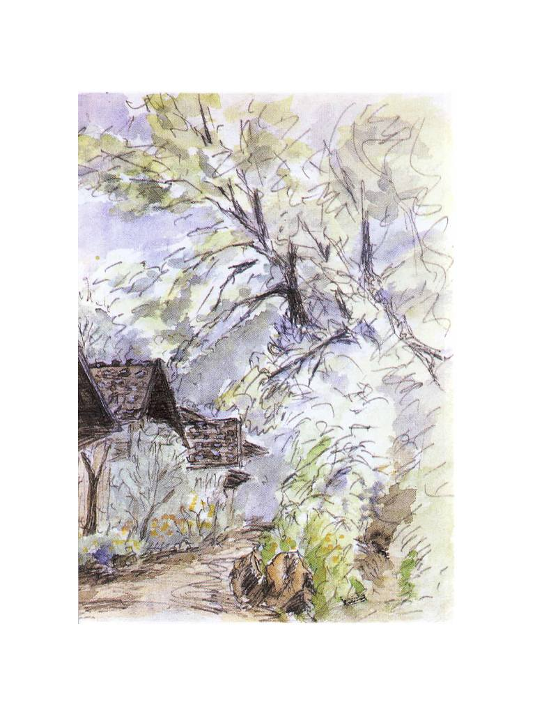
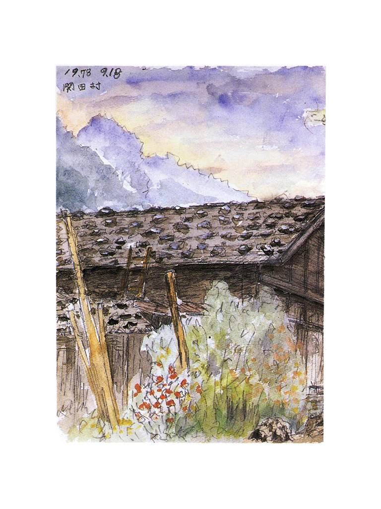
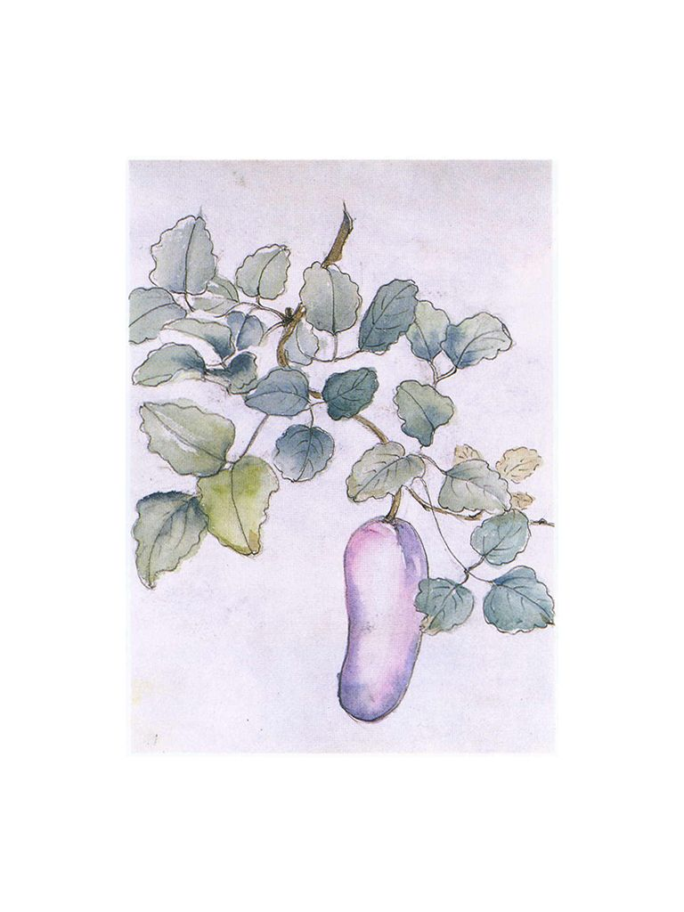

| 【大活字シリーズ】わが友 本田宗一郎 | |
| 井深大 | |
わが友 本田宗一郎 井深大



まえがき
一九九一年八月五日、本田宗一郎さんが八十四歳の生涯を終えられました。本田さんは、私が心より尊敬する先輩であり、また兄貴と慕う方でした。お互いに、本田技研工業最高顧問、ソニー名誉会長などという肩書抜きで、四十年の長きにわたって、親しくおつきあいしてきました。
この本田さんを失い、私は寂しくてなりませんが、感傷にひたってばかりはいられません。本田さんのすばらしさを広く知っていただくのが、いまの私に与えられた使命だと、いま、強く強く感じているからです。
本田さんについては、その人間的魅力、経営者としてのみごとな生き方などに関して、いろいろ書かれたものがありますが、「いままでにはない新しいものをつくっていこう」と、お互いに励ましあいながらやってきた私でなければ、やはり語れない部分があるかと思っています。
それに、本田さんが、自動車の技術では、日本はもちろんのこと、世界のだれもできなかった、すばらしい功績を残されたにもかかわらず、日本での評価はまだまだ低いというのが、いまの私にとって、何よりの不満なのです。ほんとうにオリジナルで創造的な仕事をされ、それまでのオートバイや自動車のエンジンの概念を変えてしまうほどの〝革命的〟なことをなさったのに、それをきちんと理解できる人がいないのか、当然受けるべき正当な評価を得ていないというのが、私が痛切に感じるところです。これは、たんなる友情からでなく、〝技術者〟としての目から見て、もっとも納得できないことなのです。もし、本田宗一郎という方と直接接触がなかったとしても、私は、日本にこういう人がいたということを、たいへん誇りに思ったことでしょう。
しかし、こうした本田さんの一面、というより核心にふれる部分は、いろいろな事情もあって、ほかの人にはなかなかできないことかもしれません。本田さんについて語るのが、いまの私の使命だというのは、こうした思いがあるからです。
本田さんは、自分を誇ったり、えらそうに見せることをいちばん嫌っていました。また、世間的な評価などはいっさい気にしませんでした。自分のやりたいことをやっているときが、いちばん楽しそうでした。後ろを振りかえることをせず、いつも前だけしか見ていませんでした。そうした本田さんのお人柄は十分に承知のうえで、この本では、本田さんについて私が感じたことを率直に述べました。
この先、もう本田さんのような人はなかなか現われないでしょう。それほど巨きな人を、私たちは失ったのです。
最後に、この本をまとめるにあたり、私の記憶のあいまいな部分を補っていただいた、本田技研工業のご関係者の方たちを含めた皆さんに感謝いたします。
また、この本の巻頭を、本田さんの絵で飾ることができました。これは、本田さんのスケッチ帳からのもので、いずれも私にとっては、いろいろな思い出がよみがえってくるものです。掲載をご了解いただいたご遺族の方たちに感謝いたします。
一九九一年十二月三日
井 深 大
１ 本田さんと私
本田さんの最後の励まし
八十三歳のこの年になって、私はワープロを習いはじめました。これまで、若い人がワープロを打つのを横目で見ながら、私には関係のない機械だと思ってきたのですが、漢字を忘れやすくなったのと、頸 椎 の故障のために、ペンを持つという細かい作業がしにくくなったため、原稿を書いたりするのに、最近、たいへん手間どるようになってきました。ワープロができれば、キーをたたくだけで、めんどうな漢字も機械が出してくれますから、ようやく私も、ワープロ嫌いを返上しようと考えたわけです。
八月の夏休み、軽井沢の別荘にこもるときにワープロを持っていき、孫に使い方を教わりながら、ポツポツとキーをたたいてみました。最初は、かな入力に挑戦しましたが、キーボードの文字の配列が覚えきれそうもないので、アルファベットを使ったローマ字入力に切りかえました。英文タイプは昔すこしやったことがあるので、こちらは、なんとかなりそうでした。
しかし、ただワープロを練習するというのも、おもしろくありません。そこで、私はひとつ目標を立てました。それは、本田さんに、ワープロで書いた手紙を出してやろうということでした。
このところ、私は頸椎の故障――正確にいうと、頸椎後縦じん帯骨化症というむずかしい病名がついています――のため、手だけでなく、足の神経もやられて、歩くのがすこし不自由になっています。好きなゴルフもできず、くさっていた私を、五月に対談のために久しぶりに会った本田さんが「おまえ、ちゃんと歩けず、好きなゴルフもできないようじゃだめじゃないか」と、さんざん励ましてくれたのです。口は悪いけれど、いかにも本田さんらしい温かい励ましでした。
じつは、その本田さん自身、数年まえに大病で倒れたことがあります。おそらく脳梗塞ではないかと思うのですが、このときは、よくなってくれるだろうかと、私もたいへん心配しました。しかし、本田さんは、その後、毎日ウォーキングをして、自分で病気を征服してしまったのです。
そんな本田さんから励まされたものですから、私も「よーし」と内心思うところがありました。私の元気なところを見せて、本田さんを驚かせてやりたかったのです。そのために、ワープロで手紙を書いて出すというのは、われながら悪くないアイデアだと思いました。
本田さんも私も好奇心が強く、新しいものが出るとすぐ飛びつくほうです。私もソニーでつくることには人一倍関心がありましたが、これを自分で使うことに関しては、ふたりともお手あげというところでした。「あれは、俺たちには関係のないものだね」と、ふたりでよく笑ったものです。そのワープロを私がマスターしたら、あの本田さんのことですから、おおいに悔しがるにちがいありません。
私の書いた手紙を見たときに、本田さんがどんなにびっくりした顔をするか、それが楽しみで、私もワープロのキーを打つはげみになりました。
しかし、結局、本田さんには手紙を出せませんでした。私がワープロの練習を始めたのが八月一日ですが、それからまだあまり日もたたない八月五日には、本田さんがお亡くなりになってしまったからです。もう、自分で書いた手紙を出したいと思う人も、私にはいなくなってしまいました。ワープロに手を下す気も失い、練習も中断したままです。
「また会おうね」
本田さんは、私にとって、かけがえのない兄貴であり、先輩でありました。
よく人に聞かれるのですが、私と本田さんは仕事の面でもいろいろなつながりがあったように思っている人もいるようです。しかし、仕事のことで直接相談したり、いっしょに仕事をしたということは、四十年間のおつきあいのなかで一度もありませんでした。まして、困ったからあいつに助けてもらおう、などということはまったくありません。お互いに、相手の会社や仕事のことには口を出さないという不文律のようなものがあったのです。本田さんも私も、仕事では自分勝手というかわがままというか、唯我独尊のところがありますから、もしふたりが仕事を媒介につながっていたら、すぐけんか別れをしていたかもしれません。
ですから、私たちのつきあいは、会社を抜きにしたほんとうに個人的なものでした。私たちのことを知る人からも、よくいわれるのですが、私たちふたりは、性格的にはまったく正反対といってもいいくらいのところがあります。
本田さんは、「ネアカの大将」という言葉がぴったりの人で、ふだんは冗談ばかりとばしています。どんな席でも、本田さんがひとりいると、座がパッと明るくなる。好きなお酒がはいると、ますます冗談が冴えてくるといったように、とにかく陽気なのですが、私のほうは、どちらかといえば無口というか、あまり愛想がよくありません。お酒も飲めませんから、ふたりでいると、本田さんがひとりでお酒を飲んでは冗談を言いまくっていて、私がそれを黙って聞いているといったぐあいでした。そういう私たちをはたから見ていると、おかしな組み合わせに見えたかもしれませんが、なんでも遠慮なく言いあえる間柄でした。
そんなおつきあいが四十年間もつづいたのは、やはりそれぞれが目指すところというか、ちょっと大げさにいえば、その哲学・考え方に大きく共通するところがあったからでしょう。とにかく、本田さんの生き方、考え方から教えられたことがたくさんあります。いつお会いしても、たいへん魅力的な人でした。
私より二歳年上の本田さんのことを、私は「おあにいさん」などと呼ぶことがありましたが、まさに尊敬してやまない先輩であり、またひとりっ子の私にとって、まことに頼りになる兄貴だったのです。
その本田さんと最後にお目にかかり、「おまえ、だめじゃないか」と励まされたのが、一九九一年五月十七日でした。雑誌の「ＴＨＩＳ ＩＳ 読売」の対談（司会は石井威望さん）のために、久しぶりに顔を合わせたのです。
このときは、私が歩くのはたいへんだろうからと気づかって、本田さんはわざわざ品川にあるソニーまで出向いてくださいました。私などより、ずっとお元気そうで、対談も楽しくすすみました。私が最近関心を持っている「気」について話し、自分でも「気」がわかるようになってきたというと、「おいおい、だいじょうぶかい。おまえもいよいよ危なくなってきちゃったな。香典の前払いをしようか」と茶化しておっしゃったのも、いかにも本田さんらしいところでした。
ですから、八月五日に本田さんの訃 報 を聞いたときは、「まさか」という思いでいっぱいでした。「また、会おうね」と、その対談でお別れしてから、まさか三カ月もたたないうちに、もう二度と本田さんにお目にかかれなくなるとは、まったく予想もできないことでした。
はじめての出会い
私が、本田宗一郎という名まえをはじめて知ったのは、一九五〇年（昭和二十五年）ころだったと思います。本田さんが浜松で、自転車につけるエンジンを売り出したときです。いまの若い人には想像がつかないと思いますが、戦後まもないこのころは、ものがまだまだ不足していました。自動車などごく一部の人しか乗れない贅沢品で、国産車だと箱根の山がなかなか越せずに苦労した時代です。庶民の足といえば、もっぱら足でこぐ自転車でした。もちろん、道路はほとんど舗装されていませんし、自転車そのものも、いまのようにスポーツタイプのすぐれた性能のものではありません。その自転車に取りつけられるエンジンを考えたのが本田さんで、当時これは画期的な商品だったのです。
そのころ、ある雑誌で、このエンジンの量産にかかったという記事を見て、私はたいへん強い印象を受けました。自転車につけるものですから、排気量五〇cc の小さなエンジンですが、それを地方の小さな会社が流れ作業で量産しているというのです。なかなか元気のある奴がいるものだと、私も本田さんの名まえを記憶に刻みこんだのです。
当時は、ソニーもまだ東京通信工業といっていて、四苦八苦していたころでした。テープレコーダーの開発に取り組んだものの、なかなか進まず、電気炊飯器をはじめ、電気座ぶとんなどいろいろなものに手を出していました。もっとも、電気炊飯器といっても、木のおひつの底にアルミの電極をつけただけというしろものです。この炊飯器は、うまくいけばおいしいご飯が炊けるはずでしたが、実際に試してみると思うようにいかず、ソニーの失敗第一号になりました。そんなことをしていたので、私も本田さんの発想に感心したのかもしれません。
この原動機付自転車、いわゆる「バタバタ」のヒット後、本田さんは浜松から東京に出てきますが、私とのあいだにとくに接触があったわけではありません。それぞれ、エンジンの開発やトランジスタの開発で一生懸命だった時期です。
本田さんとはじめてお目にかかったのは、昭和二十年代の終わりか、三十年代のはじめだったと思います。古いことなので、記憶もあまりはっきりしていないのですが、世界で二番目のトランジスタラジオを商品化して、世間にソニーの名まえが知られだしたころです。本田さんが、若い人を三、四人連れて、エンジンの点火技術のことで、ソニーの本社を訪ねてこられました。エンジンを点火するのに、トランジスタ（半導体）が使えないかという相談でした。
早くから半導体に目をつけた、本田さんの炯 眼
本田さんの相談の内容は、つぎのようなものでした。
エンジンというものは、ひじょうに簡単にいえば、接点の開閉によって火花を出し、それでガソリンと空気を混合したものに点火するのですが、そのころは、接点の具合がすぐ悪くなってしまうので、着火する火花の波形がでたらめになるといってもいいものでした。ですから、当時、自動車の調子が悪いというと、接点をとってサンドペーパーでこするというのが、もっとも手っとり早い修理法だったようです。まあ、いつ発火させるかということは、どうにかコントロールできるけれども、火花の波形のほうはコントロールできないという状態で、不安定なところがありました。しかし、この火花については、なんとかしようと関心を持つ人は、ほとんどいなかったようです。
この火花の波形を、トランジスタできれいにできないかというのが、本田さんがソニーに持ち込んだ問題だったのです。
いまでこそ、車にはＩＣやＬＳＩがたくさん使われていて、半導体がないと走らないほどになっていますが、そのころ自動車やオートバイにかかわっていた人で、車に半導体を使おうと考えた人は、おそらく本田さんひとりだったのではないでしょうか。これは私の感じなのですが、同じ技術の世界でも、自動車のエンジンというのは、かなり保守的なところがあって、新しい発想をなかなか受け入れない面があります。ですから、だれも注目していない火花の波形に取り組み、しかも、いままでになかったものまで取り込んでいこうという本田さんの発想には、私もびっくりすると同時に、すっかり感心したものです。
ただ、このときの話はうまくいきませんでした。私自身も、「いずれ将来は、エンジンの電気まわりは半導体がコントロールするようになるだろう。これは、私のほうの〝飯のタネ〟にもなる」と考え、実際に半導体を使ったエレクトロニクスの着火方式のエンジンを組み立て、そのデータを本田さんに提供したりしました。
こうして、ソニーも本田さんに協力したのですが、本田さんには本田さんの思惑があったのでしょう。本田さんはやはり機械のほうの人ですから、半導体のようなまだまだ未知のものはあてにはならない、という考えもあったようです。ですから、私のほうではけっこう一生懸命協力したのですが、結局、本田さんには受け入れてもらえなかったのです。
こうして、仕事や商売のほうで、ソニーとホンダが組むというのは、最初から実現せずに終わりましたが、それ以来、本田さんとのおつきあいが始まったわけです。
ソニーのポータブルテレビと、本田さんの小型発電機の関係
本田さんと私はいっしょに〝仕事〟をしたことはなかったと言いましたが、じつは、ひとつだけ、本田さんと〝仕事〟をしたことがあります。一九五九年に、ソニーがトリニトロン方式のポータブルテレビを開発したときのことです。五インチのこのテレビは、世界ではじめての小型テレビでした。
せっかく、どこへでも持っていける小型テレビをつくったのですが、このテレビにはひとつ問題がありました。それは、電源の問題で、当時は、電池などもまだいいものがありませんでしたから、コンセントのないところでは使えなかったのです。ですから、〝ポータブル〟と銘打ってはいるものの、そのままでは、どこへでも持っていくというわけにはいかなかったのです。
そのころ、本田さんのところでは、小さなエンジンでまわす小型発電機を手がけていました。テレビといっしょに持ち運べる小さな発電機があれば、とりあえず電源の問題は解決できます。そこで、本田さんのところに、小型発電機の供給をお願いしました。もっともテレビ用には、発電機のたてる音ができるだけ小さくなければいけないなど、こちらからも注文をつけましたが、本田さんのほうでも、それに応えてくれました。
とにかく、商売のことで本田さんとの関係をもったのは、長いおつきあいのなかでも、これだけだったと思います。
本田さんと結んだ〝協定〟
本田さんとの四十年間をふり返ってみると、私の心の中で占める本田さんの大きさにくらべて、実際には、それほど長い時間、本田さんと接したわけではないことに気づき、あらためてびっくりさせられるものがあります。
以前は、私もよく本田技術研究所におじゃましたものですが、お互いにそれぞれ会社を持つ身ですから、仕事から解放されて自由になる時間もあまりなく、それほどひんぱんに顔を合わせていたわけではありません。パーティの席で会って、立ち話のように話したりすることがほとんどで、せいぜいがゴルフをいっしょに回ったりするくらいでした。ですから、本田さんも出席するというパーティがあるときなどは、私も楽しみにしていました。
とくに、ここ数年は、お互いに体を悪くしたりしたこともあって、年に何回かお目にかかるチャンスがあるといった程度でした。
本田さんとお目にかかる数少ないチャンスのひとつに、お互いが共通してかかわっている〝仕事〟の場がありました。〝仕事〟といっても、本業から離れた、いわゆるパブリックサービスです。本田さんと私は、早いころから、世の中のパブリックサービスのような仕事に関しては、お互いに頼まれたことはけっして断わらない、という〝協定〟を結んでいたのです。
たとえば、ソニーが始めた理科教育振興資金の役員や、私の幼児開発協会の理事などを、本田さんにお願いしました。本田さんのほうからは、ホンダの国際交通安全学会の役員を頼まれました。また、日本ボーイスカウト東京連盟維持財団理事長をつとめていた本田さんから、ボーイスカウト活動への協力を求められ、いまでも私は、ボーイスカウト日本連盟理事長をつとめています。
ほかにも、日本プロゴルフ協会だのなんだのと、お互いに頼んだり、頼まれたりしました。本田さんといっしょに、富士で開かれた世界ボーイスカウト大会に出席したのも、楽しい思い出です。
また、大分の「太陽の家」のことも忘れられません。太陽の家は、故中村裕さんが、「身体障害者には保護よりも、働く機会を」と、障害者が誇りをもって働きながら自立できる場として創設されたものです。この太陽の家に、最初から協力していた立石電機（現オムロン）の立石一真さんから話をうかがい、私も途中から協力するようになったのですが、ここに本田さんも引っぱりこんだのです。太陽の家では、ホンダの熊本工場の仕事をするようになりましたが、その関係で、本田さんと熊本・大分とまわり、宿泊先で夜遅くまで話しこんだこともありました。
こうして、二人が直接顔を合わすチャンスは、そうなかったのですが、私にとっては、かけがえのない〝心の盟友〟でした。本田さんという人物を抜きにしては、私の人生も語れないような気がしてなりません。
本田さんも私も、〝素人〟だった
技術者として、本田さんと私とのあいだに共通していたのは、ふたりとも、厳密にいえば技術の専門家ではなく、ある意味で〝素人〟だったということでしょう。
技術者というのは、一般的にいえば、ある専門の技術を持っていて、その技術を生かして仕事をしている人ということになるでしょう。しかし、私も本田さんも、この技術があるから、それを生かして何かしようなどということは、まずしませんでした。最初にあるのは、こういうものをこしらえたい、という目的、目標なのです。それも、ふたりとも人真似が嫌いですから、いままでにないものをつくろうと、いきなり大きな目標を立ててしまいます。この目標があって、さあ、それを実現するためにどうしたらいいか、ということになります。この技術はどうか、あの技術はどうか、使えるものがなければ、自分で工夫しよう、というように、すでにある技術や手法にはこだわらず、とにかく目標に合ったものを探していく――そんなやり方を、私も本田さんもしていました。
たとえば、ソニーがテープレコーダーを開発するときなど、最初は何もわかっていませんでした。磁気録音機をつくろうと思いたったものの、わかっているのは、ごくごく原理的な部分だけで、テープひとつをとってみても、材料もなければ、磁気材料の塗り方もわからない、そんな素人集団だったのです。
テープのベースとしては、そのころの日本にはプラスチックがなかったので、まずセロファンで挑戦して失敗し、つぎに紙を考えました。問題は、紙に磁気の粉をどう塗るかです。マグネットを乳鉢でゴリゴリこすって粉にしたものを、ご飯つぶで塗ってみる方法をはじめ、ずいぶんいろいろ試しました。そのうち、磁気の粉のほうは、蓚酸第二鉄を、フライパンに入れてしゃもじでかきまわしながら焼き、四酸酸化鉄にしたものがいいというところに落ち着きました。これは焼きすぎると使いものにならなくなるので、フライパンを火からおろすタイミングがけっこうむずかしかったものです。
この粉をテープに塗ろうというわけですが、それもなかなかうまくいきませんでした。はけで塗るには、仕上げにはタヌキの胸毛がいいと、わざわざ高いはけを買ったり、塗装屋さんが使っているスプレーガンを試したりと、いずれも失敗しました。あとになってようやく気がついたのですが、磁気の粉を溶剤で溶いたものをインクがわりにして、紙に印刷すればよかったのです。塗ることにこだわっていたので、なかなか磁気テープができなかったのですが、印刷に変えたら、あっさり問題は解決しました。
こういう話をすると、ずいぶん無茶苦茶をしていたものだと感じられるかもしれませんが、まったくそうなのです。本田さんも私も、目的を達成しようという執念がひじょうに強い。目的のためには、どんなに無茶苦茶に見える手法であろうと、取り入れられるものはなんでも取り入れるのです。その意味で、技術的には専門家でも玄人でもなく、まったくの〝素人〟なのです。
しかし、〝素人〟がこうして、ひとつひとつ苦労して自分自身の手でつくりあげていくからこそ、人真似でないものができるし、人が真似をできないものがつくれるのです。この〝素人〟という点では、本田さんも私も、まったく同じだったと思います。
経営者としては、ふたりとも失格
また、素人ということでは、ふたりとも、経営についてはまったくの素人です。経営者としての本田さんははずれているというか、事業家としての資質は、もうゼロといってもいいでしょう。そういうと、「なにを言ってんだい。おまえだって、同じじゃないか」という本田さんの声が聞こえてきそうです。
たしかに私も、会社を大きくしようとか、カネを儲けようという意識はあまりありませんが、本田さんにくらべれば、まだすこしはあります。しかし、本田さんはまったくのゼロで、とにかく裏も表もないのです。
社長として、会社の経営をちゃんとやろうなどという考えは、おそらく本田さんにはいっさいなかったでしょう。本田さんが、六十六歳で社長をやめ、以来、会社の経営にはいっさい口出しをしなかったということが話題になっていますが、実際のところは、最初から社長でなかった、と言ったほうが、本田さんの本心に近いかもしれません。会社を自分の思うように動かしていこうなどという考えはまったくなく、自分がこれをつくろうと思ったら、その目的に向かってとにかく進んでいくだけでした。途中のプロセスにどんな困難があるかということなどは、最初からまったく頭にはなく、あるのは「こういうものをつくりたい」という目的だけ。
本田さんの頭には、とにかくそれしかなく、それ以外の経営だのなんだのといったことは、いっさいなかったようでした。これは、社長をやめてからも変わらず、本田さんの頭はいつも仕事のほうに向いていたといってもいいでしょう。
社長時代、商売のためには、お得意さんをまわって頭を下げるということぐらいは、もちろんやっていましたが、それはやはり、本田さんのやりたいことではなかったでしょう。完全なエンジンをつくるとか、いいレーサーを育てたいなど、自分のやりたいことだけをやっていたかった、というのが本田さんの本心だったろうと、私には思えるのです。ですから、バランスシートなども、本田さんは一回も見たことがないと思います。
長いつきあいのなかでも、ふたりのあいだでは経営の話なんていうのは、まず出てきませんでした。ふたりとも経営者としては失格だったのですが、ご存じのように、それぞれ藤沢武夫、盛田昭夫といういい相手がいたからこそ、ここまでやってこられたわけです。
本田さんがいつも研究所にいて、本社にはほとんど顔を出さず、ハンコから何から会社のことはすべて藤沢さんにまかせておいたというのは有名な話ですが、私も、そろばん勘定などめんどうなことは、すべて盛田君がやってくれました。自分の夢を実現することだけを考えて、一生懸命やっていればいい。そういう状態をつくってくれる人たちに恵まれていたという点で、私たちふたりはほんとうに幸せだったと思います。
また、私にとっては、仕事のパートナーに恵まれただけでなく、本田宗一郎というまたとない友を得たことで、私の人生は何倍にも豊かになりました。そうした本田さんのすばらしさについては、すでにあちこちで書かれていますが、私から見て、まだまだ語り尽くされているとは思えません。私なりに、見たり感じた本田宗一郎さんをご紹介しながら、そのすばらしさの一端を示せたらと思います。
２ 技術者としての使命感
井深 だけど、私は本田さんで一番評価することは、やっぱり自動車のエンジンの完全燃焼ということを、本当につかまえているのは、このおやじさんなんだよね、物を知らん知らんと言うけどね。
ＣＶＣＣ（低公害エンジン）なんてね、本当に公害をなくそうと、実際にやれることを示したのは、このおやじさんだけどね、いろいろな事情で高く評価されていないんですよね。マスキー法（大気清浄法）なんて、アメリカで言い出してやれなかったんですからね。それをやって見せて。だけども、まだちゃんと取り入れた法律もできてないしね、日本の場合は、ディーゼルとか何とかね。
本田 ええ、問題になっています。
井深 あれは、もっと早く問題にしなきゃうそですよね。
本田 あれは、絶対に早くは問題にしないです。業者もあれば、方々皆あるからね。（ふたりの最後の対談になった「ＴＨＩＳ ＩＳ 読売」対談より。これが掲載されたのは、本田氏が亡くなられたあとの一九九一年十月号）
技術者としての志の高さ
本田さんについては、自分がつくった会社であるにもかかわらず、会社は株主のものであって本田家のものではないと、子どもを会社に入れなかったとか、「もう年寄りの出る幕ではない」と、社長の座をおりたときの引き際のみごとさなどがよく賞賛されています。たしかに、そういう点だけをとってみても、本田さんのようなみごとな生き方のできた人は、なかなかおりますまい。しかし、私から見ると、そういうことだけでは、本田宗一郎という人のすばらしさは語れないと思うのです。
私が、本田さんを高く評価する点は、大きくいって二つあります。ひとつは、技術者としての志の高さというか、完璧なエンジンづくりを目指したその姿勢です。もうひとつは、会社のことだけでなく、広く世の中のことや、みんなが上手に幸せに暮らしていけることをつねに考え、ほんとうの意味での「真理」を自分のできることで実行し、一生を貫いた存在だった、ということです。
このふたつのことは、ぜひ強調したいのですが、まず、私の目に映った、技術者としての本田さんのことをお話ししたいと思います。
何もわかっていなかったからできた、〝オートバイ革命〟
技術者としての本田さんを語る場合、まず、オートバイエンジンの〝革命〟から話を始めなければならないでしょう。オートバイというものを、本田さんはそれまでのものとはまったく違ったものにした、といってもいいのですが、この〝違業〟が、のちにＣＶＣＣをつくろうという発想へとつながっていくのです。
本田さんは一時、〝世界のオートバイ王〟といわれていましたが、日本の一オートバイメーカーから、〝世界のホンダ〟へ飛躍するきっかけとなったのが、一九五四年の三月にした「マン島レース出場宣言」でした。ご存じの人も多いでしょうが、毎年、イギリスのマン島に、世界各国のオートバイ関係者が集まって、その技術を競うＴＴレース（ツーリスト・トロフィー・レース）が行なわれます。世界各国で行なわれるレースのなかでも、マン島レースは、二輪車のオリンピックともいわれるように、オートバイ関係者にとっては、ここで優勝することが夢であり、誇りでもあるのですが、そのレースに出場すると、本田さんは高らかに宣言してしまったのです。
日本の国内だけでしか通用しないものをつくっていることに、本田さんは飽きたらない気持ちだったのでしょうが、その宣言から三カ月後に、技術視察のためにはじめてヨーロッパに行った本田さんは、マン島のレースを実際に見て、それこそド肝を抜かれてしまうくらい、びっくりしたそうです。
このときの話は、よく本田さんから聞かされましたが、なにしろ、走っている車の迫力が、日本のオートバイとはまったく違うというのです。おそらく出場宣言をしたときの本田さんは、多少技術の差はあっても、なんとかなるだろうくらいにしか考えていなかったでしょう。しかし、ドイツのＮＳＵにしても、イタリアのジレラにしても、日本のとは比較にならないほどの馬力で走っていた。とにかく、技術的に格段の違いがあったのです。それを自分の目で実際に確かめて、さすがの本田さんも、自分の考えていたエンジンなんかじゃ、とても太刀打ちできない、ＴＴレースで上位につけるどころか、出場さえ夢物語でしかない、と強い衝撃を受けたようです。
そのショックのあまり、「俺は、えらいことを宣言してしまったものだ。この宣言が、いつになったら実現できることやら」と、ほんとうに心細くなったそうです。
マン島レースのショックから生まれた、常識破りのエンジン
あの本田さんにしても、当時は、世界のオートバイ技術から見ると、〝井の中の蛙 〟でしかなかったのでしょう。世界の最高水準の技術と、自分のところの技術のあまりに大きな差を見せつけられて、本田さんもさぞ愕然としたと思います。しかし、そこでへこたれてしまわないのが、いかにも本田さんらしいところです。
マン島のレースに勝つためには、いままでと同じようなエンジンをつくっていてはだめだ、それにはどうしたらいいか――持ちまえの集中力を発揮して、本田さんは考えつづけたことでしょう。マン島のレースは、一二五cc クラスとか二五〇cc クラスとか、気筒の容積によってレースがクラス分けされていますが、たとえ小さな容積でも、いままでの馬力では通用せず、数倍の馬力が出るようにしなければ、このレースに勝つことはとても無理だということがわかったわけです。そのためにはどうしたらいいかということを、本田さんは一生懸命に考えたのです。
そして、本田さんが出した結論が、エンジンの回転数を上げるということでした。それも、それまでオートバイのエンジンは、三〇〇〇回転ぐらい、最高でもせいぜい四〇〇〇回転ぐらいだったのを、八〇〇〇回転とか一〇〇〇〇回転にしようというのです。
これは、当時のオートバイ技術の常識からは、およそかけ離れたものでした。世界で、このようなことをやっていた人はだれもいません。当然、本田さんのところの技術者は、「そんなことは、夢にもできっこない」と、みんな大反対です。
「おまえたちじゃ、俺の考えはわからん」と、今度は本田さんは大学の先生のところに相談に行きます。戦前に、本田さんがピストンリングの製造でさんざん苦労したとき、浜松高等工業学校（現静岡大学工学部）の教授に相談したところ、シリコンが足りないと、いともあっさり問題が解決したことがあったので、大学の先生なら、回転数をあげるためのいいヒントをくれるにちがいないと、本田さんも考えたのでしょう。
しかし、頼みの綱だった大学の先生からは、もっとこっぴどく扱われたそうです。「そんなエンジンの常識からはずれたものができるわけがない」と嘲笑されたというのです。
新しい技術は、へそ曲がりから生まれる
私もそうですが、本田さんもかなりへそ曲がりのところがあって、周囲から「できっこない」と言われると、「それならやってみようじゃないか」と、〝その気〟になってしまう面があります。このときもそうで、何がなんでも八〇〇〇回転のエンジンをつくるのだと、本田さんは技術者たちにはっぱをかけ、実際につくり上げてしまうのです。
といっても、八〇〇〇回転のエンジンなんていうものは、いままでにまったくなかったものですから、部品ひとつをとっても、いままでのものは、そのままでは使えません。ピストンリングはすぐに磨滅してしまう、バルブもすぐ故障してしまう、シリンダーもイカれてしまうといったぐあいに、高速回転させると、ほうぼうに問題が出てくる。そうした欠点を、一つひとつすべて解決していかなければならないのです。従来の技術では解決できなければ、新しい技術を模索していかなければなりません。
新しいものをつくり出すときの、こうした苦労は私にもよくわかります。たとえば、ソニーがはじめてテレビに取り組んだとき、ソニー以外は世界中がみなシャドウマスク方式だったのを、うちだけはクロマトロン方式をとったのです。そうなると、ガラスの入れ物ひとつをとっても、自分のところで設計することから始めなければなりませんでした。他社と共通の方式をとっていたら、ガラス屋さんももうわかっているので、「頼むよ」と言えば、あとはそうめんどうなこともないのですが、いままでガラス屋さんがやったことのないものを頼むだけに、「頼むよ」ではすまなくなってくるわけです。新しいものをつくるときというのは、万事がこの調子です。簡単なものでも、いままでのものがそのまま通用しないことが多いのです。
本田さんのところでも、この高速回転エンジンを製品化するには、たいへんな苦労があったことでしょう。
人真似だけでは、大きくなれない
こうして本田さんは、だれからも「できっこない」と言われた、高速回転のエンジンをつくり上げたのです。まさにエンジンの革命です。後のＣＶＣＣもそうなのですが、車のエンジンというのは、最初につくられてから百年ほどたっていても、基本的なところはほとんど変わっていません。それをまったく違った発想からアプローチし、世界のどこを探してもない、まったく新しいエンジンをつくり出していったのが、本田さんだったのです。たんに、改良して性能をよくしたという次元とはまったく違うレベルの仕事です。
ここで、ついでにふれておくと、戦後、しばらくのあいだの日本のオートバイ技術は、マン島のレースを見た本田さんが青ざめたほど、世界の技術水準からははるかに遅れていましたが、本田さんが一〇〇〇〇回転もするエンジンをつくり出し、マン島レースを制覇して世界をアッと言わせると、本田技研だけでなく、他社の技術もレベルアップし、日本はたちまちのうちに、オートバイ王国になってしまうのです。
もともと、日本の産業界というのは、外国からモノを持ってきては、それを見本に同じものをつくりだす、ということから始まっていて、いまでも、それが半ば体質のようになっています。新しい技術にしても、ひとつの会社が新しいものをつくり出すと、それまで無理だ、不可能だと言っていた他社も、すぐ同じものをつくるようになります。そういうところは、日本人は上手なのです。
私のところでトランジスタラジオをつくったときも、これは日本で初めてのものなので、しばらくのあいだは、ソニーだけしかつくっていませんでした。ソニーの独占状態です。ところが、数年もたつと、あっちでもこっちでもトランジスタラジオをつくり始め、たちまち競争状態です。べつに企業秘密を盗むとか、そういうことをしなくても、ひとつの会社ができたことは、他の会社もすぐできるようになるというのが、日本のおもしろいところです。
本田さんのオートバイエンジンのときも、同じようなことが起こりました。この、まったく新しいエンジンに刺激され、各社が競いあって技術開発に取り組んだ結果、日本のオートバイの技術レベルはいっきょに世界の先をいくものに飛躍したのです。
ですから、人真似が上手ということは、けっして悪いことだとは、私は考えていません。一社だけが独占している状態より、各社が競争しあったほうが、よりいいものができあがってくるからです。ただ、人の真似をしているよりは、日本で初めて、世界で初めてというものをつくったほうが、人より一歩先に進むことができます。ホンダやソニーが大きくなれたのも、それがあったから、という話なのです。
それはともかく、現在の「技術大国・日本」の先がけとなる「オートバイ王国・日本」をつくり出したのは、ひとえに本田さんの力だったと言ってもいいでしょう。
本田さんを〝大変身〟させたもの
このように、本田さんが、エンジンというのは八〇〇〇回転も一〇〇〇〇回転もするものだと、それまでのオートバイのエンジンの概念をまったく塗り変えてしまったのも、もとはと言えば、あまり当てのない「マン島レース出場宣言」にあったわけです。
あの宣言をしたときの本田さんに、まったくなんの目 論 見 もなかったとは思いませんが、世界の最高の技術レベルについて、それほど知っているわけでもなく、少なくとも、自分のところの技術や企業の力にそれほど確かな裏打ちや計算があって宣言したわけではないでしょう。だからこそ、実際にレースを見て、大きなショックも受けるわけです。
そして、このショックをきっかけに、本田さんの技術に対する考え方も、大きく変わったのです。それまでの本田さんは、オートバイというものは、便利な乗り物として、どこまですぐれたものがつくれるか、その方向に向いていたのですが、やはり技術的にすぐれたものをつくらなくてはだめだ、と考えるようになったのです。
もし、このマン島レースでのショックがなければ、本田さんは、ただの〝ちょっとおもしろいオートバイ屋のおやじ〟で終わっていたかもしれません。少なくとも、その後の本田さん自身の技術開発への取り組み方や、会社の雰囲気などを見ていると、このショックが大きな起爆剤になったことは否定できないでしょう。
とにかく、エンジンの回転数を、従来のものの倍以上にするという大目標を、このときの本田さんはいきなりかかげてしまいます。この技術を使えばできるだろうという当ても、最初はそれほどなかったわけですが、あとは、目標に向かって突っ走ります。こうした大目標が達成できるかどうかは、「何がなんでも成功してみせる」という執念があるかどうかにかかってくるのですが、本田さんはみごとに成功し、以来、完全なエンジンをつくることに情熱を傾けるようになります。
ＣＶＣＣも、この完全なエンジンをつくるという目的を達成しようというなかで生まれてきたものですが、本田さんは、最後の最後まで完全なエンジンづくりを目指していました。ですから、レースに対する情熱も、最後まで衰えることがなかったのでしょう。
「やるなら、人をアッと言わせるものをこしらえてやる」
だいぶ前のことになりますが、本田さんに、これだけのオートバイの技術を持っていながら、なぜ四輪をやらないのかとたずねたことがあります。本田さん言わく、「やるからには、他人の追っかけたがりじゃ気がすまんから、アッと言わせるものをこしらえてやるんだ」
いかにも本田さんらしい返事がかえってきました。これがただの負けず嫌いなどでないことは、のちに本田さんのところで低公害エンジンＣＶＣＣをつくり、世界をアッと言わせたことでみごとに証明されました。
このＣＶＣＣについては、世界ではじめてマスキー法の基準をクリアしたエンジンということで、一般には知られているようです。たしかに、マスキー法の基準をクリアすることは、当初、世界のだれもが無理だと思っていたことなので、それをいち早くクリアしたのはたいへんなことなのですが、それ以上にすばらしいことを本田さんはやってのけた、と私は考えています。それは、高速回転エンジンでオートバイをまったく違ったものにしてしまったように、ＣＶＣＣも、それまでの自動車のエンジンの概念をまったく変えてしまうものだった、ということです。このことは、いくら声を大にして強調してもいいと思います。
完全なエンジンづくりを目指して
まえに「本田さんは、完全なエンジンづくりを目指していた」と簡単に言いましたが、考えてみれば、これはたいへんなことです。技術者ならだれでも抱く夢であると同時に、「やはり不可能なことだろう」と、最初からあきらめてしまうような、ひじょうに大きな目標です。「やるからには、人の追っかけではなく、アッと言わせるものをつくりたい」と言っていた本田さんですが、他人の追っかけどころか、ふつうの技術者なら考えないような大目的に向かって突進していったのです。本田さんのこういう考え方には、私もおおいに感心し、またたいへん刺激を受けたものです。
完全なエンジンをつくるためには、いろいろなアプローチの仕方があるのでしょうが、本田さんが取り組んだのは、いかにして完全燃焼させるか、ということでした。ガソリンを完全燃焼させることができれば、排気ガスの問題もなくなりますし、燃費も低くおさえることができます。
ＣＶＣＣを開発する過程で、私は何度も本田技術研究所の本田さんをおたずねしたものです。そのたびに、完全燃焼とＣＶＣＣについて、いろいろ説明してもらいました。ですから、本田さんからの受け売りで、私なりに説明しますと――。
完全燃焼には、ガソリンと空気の混合比率が問題になってきます。ふつうは、一対一〇から多くても一対一四ぐらいの濃度が使われていたそうですが、空気を二〇くらいにまであげると、燃えカスが減ってくるのです。つまり、空気の比率を大きくすると、完全燃焼に近くはなるのですが、今度はガソリンの濃度が落ちてしまうために、火花による着火がむずかしくなるという問題が起こってきます。
そこでＣＶＣＣでは、簡単にいうと、ふつうのシリンダーとは別に、小さい燃焼の場所をつくって、そこに入れたガソリン濃度の高いガスで第一次の着火をして、それがメインのシリンダーの着火を誘発するという仕組みにしたのです。
私は、車のエンジンのことにはそれほど詳しくはありませんから、専門家の人なら、また別の説明をするかもしれません。とにかくＣＶＣＣが、完全燃焼を目指して、従来のエンジンとはまったく違う発想でつくられたものだということだけは、おわかりいただけるでしょう。
まえにもすこしふれたように、ＧＭにしろフォードにしろ、あるいは他の自動車メーカーでもいいのですが、エンジンが使われるようになって以来、その根本哲学はなんら変わっていません。それに対して、本田さんがいちばん輝いていた当時というのは、オートバイにしろ四輪車にしろ、それまでの技術がどうであるかということなどは、いっさい念頭になく、完全なエンジンを目指して、自分がおもしろいと思ったこと、これならいけそうだと思ったことを、とことん追求していったのです。
ですから、そこから生まれたものは、一〇〇〇〇回転のエンジンにせよ、ＣＶＣＣにせよ、それまでには存在しなかった、まったく新しいものであり、エンジンの概念を変えてしまうものだったのです。
公害を生み出すような汚いものなんか、最初から出さないようにすればいい
ついでにいえば、もうひとつ、ＣＶＣＣの発想で、私がおもしろいと思ったのは、エンジンから出る、燃焼後のいろいろなカスの後処理をするのはいやだと、最初から本田さんが考えていたことです。
自動車の排気ガスに含まれる一酸化炭素や窒素酸化物のような有害成分をどう減らすか、これが自動車産業界の大きな問題だったのですが、そのころは、白金などの触媒を使って排気ガスをきれいにすればいい、という考え方が支配的でした。世界中のほとんどの自動車会社が、このアフター・トリートメントの線で進めていました。
しかし、本田さんの技術者魂は、この考え方に納得できなかったわけです。排出されるガスをもう一度燃やすなどという、いわば無駄働きをつけ加えるのは、エンジンの効率からいっても、ひじょうにつまらない。また、よけいなものを付け加えることで、お金もその分かかってきますし、この後処理装置自体が、まだ技術的に熟成されたものとは言いがたい。当然のことながら、エンジンが高いものになる。それというのも、汚いものを出しておいて、あとからそれをきれいにしようとするからであって、そんなことをするよりは、最初から完全に燃やして、汚いものを出さないようにしたほうがいい、というのが、技術者としての本田さんの考え方だったのです。
とにかく本田さんは、完全燃焼の一本槍で進み、ＣＶＣＣというまったく新しいエンジンをつくりあげました。
一九七〇年アメリカ議会で成立した、いわゆるマスキー法は、大気汚染の元凶のひとつである自動車の排気ガスの有害成分を、一九七五年までに、七〇年当時の十分の一に減らそうというものでしたが、そんな目標をクリアできるとまともに考えていた自動車会社は、ほとんどなかったというのが実情だったようです。そのなかにあって、ホンダが、たしか一九七二年に、世界に先がけて、マスキー法の規制値をクリアしたＣＶＣＣを発表したのも、従来のエンジンとはまったく違う発想から追っていったからこそできたことなのです。
もっと評価されていい、本田さんのオリジナリティ
よく「日本人には独創性がない」ということが言われますが、これに対しては、「とんでもない」というのが私の意見です。少なくとも、ＣＶＣＣという、まったくオリジナルなエンジンをつくりあげた本田宗一郎さんがいるかぎり、日本人には独創性がないとは言わせません。この本田さんの功績は、もっともっと評価されてしかるべきものだ、と私は考えています。
ＣＶＣＣ開発にあたっては、本田さんと若い技術者たちが、空冷にするか水冷にするかをめぐって大議論をし、最後は、若い人たちの主張する水冷に、本田さんの空冷が〝負けた〟という話なども伝わっています。
しかし、そもそも完全燃焼をするエンジンをつくろうという大目標を立て、その目標に向かって若い技術者たちを引っぱっていったのは本田さんであって、本田さんがいなければ、ＣＶＣＣという発想すら生まれなかったかもしれないのです。
現在の本田技研では、いろいろな事情から、ＣＶＣＣはあまりやっていませんが、そうした事情は抜きにしても、ＣＶＣＣに対する一般の評価について、私にはおおいに不満があるのです。まえにもすこしふれましたが、自動車の世界というのは保守的な傾向が強く、自分たち以外の考えをなかなか受け入れようとしないところがあります。たとえば、ＣＶＣＣには、第一次の着火のための場所が設けられましたが、そんなタンコブのついたエンジンなんかつくれるか――そんなふうに冷やかに見られたようです。ほかにも、経済性はどうなのかとか、批判されたり、冷笑されたり......。やっかみもあったのかもしれませんが、エンジンに革命を起こしたといってもいい業績に対して、日本は概して冷たかった。私には、そう感じられてならないのです。
その本田さんを高く評価したのが、アメリカです。一九八九年十月に、アメリカの自動車殿堂入りという、日本人ではじめての名誉を本田さんに贈りました。これは、私にとってもたいへんうれしい、本田さんの〝快挙〟でした。
多くの人を幸せにするものを
本田さんとＣＶＣＣエンジンについて語っていると、私もつい自分のことのように熱がはいってしまうのですが、ここで、本田さんがなぜ、エンジンの完全燃焼を考えたか、ということにふれておかなければならないでしょう。
本田さんの話を聞いていて、いつも私が感じさせられたことのひとつに、本田さんの考えるいいものとは、けっして高級車などではなく、みんなが便利に使えるものがいいものだという気持ちをひじょうに強く持っていた、ということがあります。完全なエンジンを目指すというのも、いかに燃費を少なくするかということを、つねに問題意識として持っていたからです。
多くの人に喜ばれるもの、多くの人を幸せにするものを、ということを、何をつくるにしても、つねに第一に置いていたのが本田さんでしょう。日本の技術者、経営者のなかで、この問題を本田さんほど真面目に追求した人はいないでしょう。そこが、たんなる技術屋と本田さんが、天と地ほども違うところだと、私は考えているのです。
とにかく、高い給料ばかり取っているアメリカの自動車会社の経営者は、日本の自動車の批判ばかりしていていいのでしょうか。よけいなことかもしれませんが、少なくとも、本田さんに対しては、彼らももっと自分を恥じてほしかったと思うのです。
３ ものをつくることへのこだわり
井深 アメリカでできるものはこっちは作りませんよという、そういう大人に日本はならざるをえないと思いますけれど。だけど、物を作ることを捨てちゃ絶対だめで、このおじさん（本田氏）が一番いい例を示しているように、物を作らなきゃだめですからね。
本田 何千でもいいから、お釈迦になってもいいから、作ることだね。もったいないようだけど、捨てることが、一番巧妙な方法だね。捨てることを惜しんでいる奴は、いつまでたってもできないね。
物を苦労して作った奴ほど強い奴はないね。物を作ったことがない奴は、皆だめだね。（最後の対談より）
ものをつくらずに金儲けをして、会社といえるか
数年まえ、小山五郎さんにお目にかかったとき、「ものをつくらないのは実業じゃない」と、あえて苦言を呈したところ、「まったくそのとおりだ」という返事が小山さんからかえってきました。
当時は、いわゆるバブル景気の真最中で、ものをつくるのが本業の会社まで、やれ財テクだなんだと浮かれていたときです。また、小山さんは、ご存じのように、太陽神戸三井銀行の名誉会長で、三井グループだけでなく、日本の銀行業界の重鎮である方です。その方が、ものをこしらえるというのが、ほんとうの実業であって、それ以外のものは、たとえ役所であろうと、それに付属する補助機関にすぎない。まして、証券会社や銀行など、ものをこしらえない人がイニシアチブをとるなんてことに間違いがある、という私の考え方に同意してくれたので、私としては、驚くと同時にうれしい思いがしたものです。
おそらく、私のこの考え方にいちばん同意してくれたのが、やはり本田さんだったでしょう。いや、本田さんのほうが、もっと私より過激だったかもしれません。会社が株なんかで儲けたり、土地の値上がりで儲けたりするのはおかしいと、昔から言っていました。
ものをつくるということに、徹底的にこだわったのが、本田さんだったといっていいでしょう。
僕は、四輪各社の決算書をみるたびに、銀行から安い金利で金を借りてきて、高い金利で車を月賦で売って、そのサヤが利潤として大きく計上されているんだなあといつも思う。七〇万円も八〇万円もする自動車だから、一〇〇％キャッシュで売るのは無理かも知れないが、金利のサヤが儲けの主要な部分になるような企業のあり方そのものが、僕のような神経には耐えられない。自動車工場を経営していても、技術とアイデアで儲けないで、金融操作で儲けているのでは、どうみても自動車会社とはいえない。
そういう会社が、日本の一流企業としてチヤホヤされ、自分でもうぬぼれているところに日本の企業の弱さがある。土地を売って儲けても同じ儲けには違いないが、何でもいいから儲けさえすればいいというのでは、折角の看板が泣こうというものである。（本田宗一郎氏著『ざっくばらん』一九六〇年刊より）
ものをつくる喜びを知らずに、ほんとうの充実感もない
私は本田さんの人生を見ていて、やはり人間というのは、働く喜びというものを追求しなくては嘘だろうと思います。ものをつくっていくなかで、いろいろな人間関係も生まれますし、クリエイティブな意欲も、そこから発生してきます。ものをつくることで、活力も生まれてくるわけです。
それが、アメリカなどでは、自分たちがものをつくっていても割りに合わないというので、よそにつくらせるようにし、自分たちの国をからっぽにしてしまいました。紙切れにサインするだけで値打ちが出るというぐあいに、紙切れに値打ちを持たせたのですが、これはどう考えても、けっして自然ではありません。ところが、日本はその真似に走ったわけです。
ものをつくらずに、土地と株でお金を儲けようとする風潮がはびこりました。形が変わらなくても価値が変わるのが、土地と株です。なんの努力もせず、汗もかくことなく、ものにまったくさわらずに、何百億、何千億儲かるなどとやっていたら、働くことがばかばかしくなってきます。原価率何パーセントの苦労なんて、いやになって当然でしょう。
だから、私や本田さんのように、ものをつくることに長年たずさわってきた者にとっては、あのバブルの時代とは、あほらしいのひとことに尽きます。バブル、つまり「あぶく」とはよくも言ったもので、紙切れをいくら売り買いしていても、何も生まれてはきません。本田さんが、新しいエンジンをつくられたのも、完全燃焼という大目的に向かって、ガソリンと空気の混合比をとことんまで追求したからで、工夫に工夫を重ねることによって、新しい技術も生まれたのです。いくら、本田さんがすぐれたアイデアを持っていても、この努力がなかったら、ただのアイデアで終わっていたでしょう。オリジナリティというのは、ものをつくる過程のなかからできてくるのです。
ソニーでやったことも同じです。トランジスタの周波数をどんどん上昇させて、世界ではじめての短波ラジオができ、ＦＭラジオもできた。ものをつくる、ものを変えるということをしなければ、新しいものなどできてこないのです。本田さんは、このものづくりに徹底的にこだわったのです。本田さんが他の経営者とちがっていたのも、ものをつくる喜びを知っていたからです。そんな本田さんだからこそ、紙切れを売り買いするばかばかしさなども、よくご存じだったのですし、また、日本をよくしたいと本気になって考えておられたのです。
幼児期の本田さん
この本田さんのことで、強く印象に残っているのは、本田さんの子どものころのお話です。私は、長年幼児教育に関心を持ち、幼児開発協会を設立して、本田さんにもこの協会の創立以来、ずいぶん気にかけていただきました。そうしたこともあって、おりにふれ、子どものころのことをおしゃべりしあいましたが、本田さんの口から何度も出たのが、近所のお米屋さんの精米機の話です。
私も覚えていますが、そのころの精米機というのは、電気ではなく石油発動機で回るようになっていて、ポンポンという発動機の音がし、石油の臭いがプーンとする。その精米機が動くのを見、石油の臭いをかぐのが、幼い本田さんは大好きで、一日中ながめていても飽きなかったそうです。その精米屋さんは、本田さんの家から一里もあるところだったので、おじいさんにせがんでは、その背中におぶわれて見にいったのですが、あるとき、おぶってくれる人がいなかったので、ひとりでたんぼのあぜ道をヨチヨチ歩いていったところ、たんぼに転がり落ちて、あわやというところを、通りかかった若い娘さんに助けてもらった――そんな話を、本田さんは、いつもたいそうなつかしげに語ってくれたものです。
私の幼児教育論からいうと、幼児期の体験は、その人の考え方や生き方に大きな影響を及ぼします。人柄や能力は、三歳になるまでの体験がだいじなのですが、本田さんがのちにすばらしいエンジンをつくったりするほんとうのきっかけは、この精米機の音と石油の臭いにあったというのが、私の考えです。
こんな話をすると、本田さんは「そうかもしれない」と、いつもうなずいてくれました。話は横道にそれるようですが、最後の対談のときも、私が胎児や新生児のすばらしい能力や可能性についてふれると、そういえばと、赤ちゃんのときから、鍛冶屋さんのまねのような動きをしたと、おばあさんからよく聞かされたという話をしてくれました。本田さんの家は鍛冶屋さんで、刀などもつくっていたのです。
また、胎児や新生児は、くり返し与えられた刺激を好きになり、それを身につけていきます。一般的には「生まれつき」といわれているような性格や好みなども、こうして形づくられると私は考えています。それに対しても、お母さんのお腹の中にいる胎児のときから鍛冶屋さんの音をくり返し聞いていたためか、「僕なんか、子どものときからずっと刀が好きだったね」と、理屈ではなく、感性で体得した好みの好例をあげてくれました。
このように、私の幼児教育論に、本田さんは、これ以上ないという〝実例〟を示してくれたのですが、それはともかく、こうしたものづくりへの関わり、ものをつくることへの情熱も早くから目覚めていたようです。
たとえば、本田さんは小さいころ、見よう見まねで刀をつくったといいます。長さ十センチくらいの刀をつくり、サヤまで自分でつくったというからたいしたものですが、それがなんと、小学校にはいるまえのことだったというから驚きです。
この刀以来、本田さんはものをつくる人生を歩みつづけたのです。
ものづくりから生まれた自信
本田さんが十代のとき、自動車修理工場に小僧さんではいり、最初は子守りしかさせてもらえなかったのが、いざ修理をやらせてもらうようになると、たちまち頭角をあらわしたというのは、よく知られている話です。なにしろ、修理を始めて一年もたつと、古い自動車を改造してレーサーをつくってしまうようになる。それも、はじめはエンジンの構造もよく知らなかったのに、やがてエンジンをバラして改造までしてしまい、そのレーサーで一着をとるなんてことまでやってのけてしまうわけです。器用だったのでしょうが、それ以上にものをつくることが好きだったのでしょう。
僕は、戦時中にピストンリングの工場をやっていたが、その時の工作機械はほとんど自分で造った。家を建てようにもセメントの割当がないから、山から石灰を持ってきて自分でセメントを造って基礎工事をやってしまった。ガラスも炉を使って、自己流に造り始めたら終戦になってしまった。少しべこべこしたガラスが出来上ったが、ガラスというものは、風が入らなくて景色が見えればいいのだから、結構ものの用に足りた。ちかごろは、あろうはずのない馬の角まで造って売るやつがいる。僕は神様じゃないから馬の角はとても造る気にはなれないが、ガラスやセメントや機械なら人が造っているものだし、僕に造れぬはずがはないという気でいる。僕は、たとえロビンソン・クルーソーの孤島に流されても生き抜いていくつもりだし、瓦の上にまかれても、芽を出し花を咲かせる自信がある。（『ざっくばらん』より）
こうした本田さんですから、泣きごとを言ったり、人に頼ろうという発想は大嫌いでした。たとえば、戦後の日本の産業界は、長いあいだ政府の保護を受けていたわけですが、それに対しては、まっこうから反対していました。私も大反対でしたから、ふたりで「けしからん」と気炎をあげたこともあります。
ですから、いまのように、やれ証券会社が悪い、銀行が悪いと、自分のことは棚にあげて、悪いことは人の責任にするような風潮は、本田さんがいちばん嫌ったことでしょう。こういうことは、ものをつくる苦労を嫌って、土地や株などの紙切れだけで安易に儲けようとして失敗したから出てくる愚痴だと、私も思います。
ものをつくる苦労や喜びを知っている人は、自分の失敗を、そう簡単に人のせいにはしません。失敗したのは、自分がどこか間違っていたからだということがわかっているからです。失敗を人のせいにしていたら、いつまでたっても、新しいものなどつくれっこありません。
逆にいえば、ものをつくっていればこそ、ほんとうの自信なども生まれてくるのです。本田さんの生き方は、ご存じのように、たいへん堂々として男らしいものでしたが、その自信も、ものをつくっているところに源があったのだと思います。
ものづくりにこだわり、生涯、ものをつくることに情熱を傾けた本田さんの姿勢を、いまの人たちがもっと学んでほしいと願うのは、おそらく私ひとりではないでしょう。
４ 見たり、聞いたり、試したり
井深 あんまり情報が多すぎちゃ、（ひとつのことを夢中になってやるような人を育てるには）まずいでしょうね。本が一冊しかなかったら、一生懸命読みますからね。
本田 そうですね。
井深 このごろは、一つの本にかじりついて読みとおすなんていうのは、滅多にないですからね。
本田 本の話が出たから言うけど、人から聞いたことと、本で見たことは、全部、違うね。また、自分がこの目で読んだ本と、ばらばらと人から聞いた本とでは違うんだね。それからまた、本の通りにやった奴とはまた違うね。本の通りにやって手を切ったりするのは、それだけ余分だけれども、そのかわり、ちゃんと心の中へしみ込んでいるわね、いろいろな点が。（最後の対談より）
傷だらけの左手
本田さんの著書に、『私の手が語る』というタイトルのものがありますが、本田さんの左手が傷だらけだったことは、ご存じの人も多いでしょう。右手は、ハンマーを持ってたたくほうですから、こちらはまったくけがをしていない、きれいなままです。それに対して左手のほうは、ハンマーにたたかれて、けがをしていない指がない。本田さんによると、取れそうになった指をつないであるのだそうです。
手だけでなく、顔や体のほうも、レース中の事故でずいぶんけがをしています。文字どおり、〝傷だらけの人生〟です。
本田さんは、正規の学校教育はあまり受けていませんが、なまじな教育を受けた人より、よほどすぐれた見識、洞察力を持っておられました。これは、手を傷だらけにしても、本田さんが自分で実際に試していくなかで、身につけていったものなのでしょう。
頭で知ったことというのは、しょせん、それだけのものです。知識を詰め込むことはできても、知恵にはなりにくい。私も、長年にわたる幼児教育の研究からつくづく感じるのですが、赤ん坊がまだ言葉を話せないうちから、くり返し体験したことは、その人が生まれつき持っていた〝素質〟のように、ほんとうに身についたものになりますが、大きくなってから理屈で考えるようになって覚えたものだと、なかなか身につきにくいのです。
見たり、聞いたりして、頭で知ったことより、自分で試して、経験したうえで覚えたことのほうが、いかにだいじかということが、本田さんを見ていてもよくわかるのです。
大体、僕の人生は、いわゆる見たり、聞いたり、試したりで、それを総合して、こうあるべきだということで進んできた。もしわからないようなことがあって、そのために本を読むんだったら、そのヒマに人に聞くことにしている。五〇〇ページの本を読んでも、必要なのは一ページくらいだ。それを探しだすような非能率なことはしない。うちにも大学出はいくらもいるし、その道の専門家に課題をだして聞いた方が早い。そして、それを自分のいままでの経験とミックスして、これならイケるということでやっているだけで、世の中の人は、本田宗一郎は、ピンからキリまでやっていると思っているようだが、とんでもない。（中略）
さっきもいった通り、人生は見たり、聞いたり、試したりの三つの知恵でまとまっているが、その中で一番大切なのは試したりであると僕は思う。ところが世の中の技術屋というもの、見たり、聞いたりが多くて、試したりがほとんどない。僕は見たり聞いたりするが、それ以上に試すことをやっている。その代り失敗も多い。ありふれたことだけど、失敗と成功はうらはらになっている。みんな失敗をいとうもんだから、成功のチャンスも少ない。本田が伸びた伸びたって、最近みんなが不思議がるが、タネを明せばこれ以外にない。やっているだけ知っているということだ。その点、僕自身が、いくらかよその技術屋よりも試しているから意志が強い。本に書いてあるから大丈夫やれといって指示するのと、おれがやってみて大丈夫だったからやれるというのとでは、やる方も全然感じが違う。安心してやれる。だから僕は、試すことが一番大切だとつくづく思う。（『ざっくばらん』より）
「試したり」が欠けている、今の教育
この本田さんではありませんが、私自身も、「見たり、聞いたり、試したり」の「試したり」の部分が、最近の若い人には少なくなっているのが、気になってなりません。「見たり」「聞いたり」はよくするのですが、とくに最近の教育に欠けているのが、この「試したり」でしょう。
また、本田さんの子ども時代の話にもどるのですが、本田さんは子どものころ、おもちゃを買ってもらったことは、いっぺんもなかったそうです。当時は、大きな町へ出なければおもちゃ屋がなかったということもあります。私が育った愛知県の安城でも、ここはけっして小さな町ではなく、りっぱな本屋が二軒もあったくらいですが、おもちゃ屋は一軒もありませんでした。しかし、本田さんの場合、おもちゃ屋が遠かったということよりも、おもちゃ屋で売っているようなおもちゃでは、まったく気に入らなかったというのが、おもちゃを買ってもらわなかった最大の理由だったようです。
そのころのおもちゃといえば、今のように、本物そっくりの精巧な動きをするようなものはまったくなく、動いたとしても、せいぜい首を振るぐらいのものです。本田さんは、昔から自分でレースに出たり、飛行機を操縦したり、社長になってからも運転手を断わって、自分で自動車の運転をしたり、年をとってからもハンググライダーや熱気球に挑戦して周囲をびっくりさせるといったぐあいに、とにかくダイナミックに動くことが大好きなのです。
そんな本田さんですから、子どものときも、動かないおもちゃには満足できなかったのでしょう。
つまらないおもちゃで遊ぶくらいなら、自分でつくったほうがましだと、凧でもなんでも、自分で木をけずったり、竹をけずったりして、本田さんは自作のおもちゃで遊んだのです。手先が器用で、研究心旺盛な本田さんのことですから、さぞ、よく飛ぶ凧をつくったりしていたことでしょう。
本田さんに限らず、そのころの子どもはみんな、おもちゃがほしいと思えば、自分でつくったり、工夫したりするしかありませんでした。私は、本田さんとは違って、目覚まし時計を分解してこわしたり、ミシンを修理したりして遊ぶほうを得意としていました。
私の場合、とくに思い出に残っているのは、小学校二年のときだかに、時計屋さんで売っていた電鈴（ベル）がほしくてたまらず、さんざんダダをこねて買ってもらったことです。電鈴と、平角一号という大きな電池と、絹巻き線（銅線に絶縁体の絹を巻いたもの）を買ってもらい、リンリン鳴らしてはうるさがられたものです。そのうち、これらをバラして、電磁コイルをつくり、電信機をこしらえたりしました。
こう見てくると、どうやら子どものころから、同じ遊ぶのでも、本田さんが動的、野外派なら、私は、どちらかといえば静的、室内派というように、ふたりの好みや性格はまったく違っていたようです。
失敗をするから、「試したり」が生きてくる
しかし、こうしておもちゃを自分なりにつくったり工夫したりすることが、結果的には、当時の子どもたちに、「試したり」の機会を与えてくれていたわけです。それにくらべると、いくら自分でつくるといっても、プラモデルなどを買ってきて、接着剤でくっつけているだけでは、ほんとうに「試したり」をしているとは、とてもいえないでしょう。本田さんも、「既製のものを組み合わせているだけじゃ、手は不器用になるよ」と言っていましたが、「試したり」ではじめて身につくものがいろいろとあるのです。
もちろん、自分で「試したり」をしていると、うまくいかなかったり、失敗することもたくさんあります。私なども、中学にはいってからですが、トランスやコンデンサーなどを自分でつくりました。
売っていないから、自作するしかなかったのですが、古い電話を買ってきては、使えそうな部品だけをチョン切って集め、それを組み立てていくといったあんばいですから、お世辞にも格好がいいとはいえません。それでも、買ってきたものをスッと使うのとは、満足感ひとつをとっても、まったく違います。
また、自分で何かやろうとすると、手痛い失敗をすることも、当然あります。ほんとうに手や指を切ってけがをすることもあります。しかし、だからといって、安全ばかりを考えていると、せっかくの「試したり」のチャンスを失ってしまいます。
「こわいのは失敗することではなく、失敗を恐れて何もしないことだ」というのは、本田さんの有名な言葉ですが、失敗の悔しさ、つらさを味わわずに育った子どもは、いったいどうなるのでしょうか。少なくとも、本田さんのような人は、ぜったいに出てこないことだけは確かです。
人は坐ったり、寝たりしている分には倒れることはないが、何かをやろうとして立って歩いたり、駈け出だしたりすれば、石につまずいてひっくり返ったり、並木に頭をぶつけることもある。
だが、たとえ頭にコブをつくっても、膝小僧をすりむいても、坐ったり寝転んだりしている連中よりも少なくとも前進がある。大怪我をして病院へかつぎこまれて、たとえ振出しに戻されたところで、この次はあんなヘマをやらずに駈けてみせよう、という意義のある経験にはなるわけだ。
だから、往々世の中では坐ったり、寝転んだりしている人間がケガをしたりコブをつくったりする人間をみて嘲笑するようなことがあるけれども、これは大変お門違いなことである。そういう連中は最後には嘲笑されることを知らぬバカ者なのである。（本田宗一郎氏著『俺の考え』一九六三年刊より）
「試したり」を成功させる秘訣
本田さんは、たいへん器用な人でした。何かほしいと思うと、すぐ自分でつくってしまう――極端にいえば、そういうところがありました。あれがほしい、これがほしいという欲は、人間ならだれにもあるでしょうが、本田さんは、ただ頭の中で考えるだけでなく、すぐにそれを具体化する実行力があったのです。
しかし、このように、本田さんは「試したり」の人だったと言うと、がむしゃらになんでもやってみるというイメージを抱く方もいらっしゃるかもしれません。たしかに、本田さんは、一見、豪 放 磊 落 で、大雑把なところがあるように見えたかもしれませんが、いざ試すときは、細かいところまで慎重に気を配っていたのです。
だいたい、本田さんが最初に勤めた自動車修理屋さんで、自動車の知識を得ていったのは、細かい観察眼によるものでした。部品の修理の仕方がわからないときでも、その部品をていねいに、ネジ一本でも、どのようについていたか、元の形がわかるように分解していき、これはこうなっているのかと、ひとつひとつ自分の目と手で確認していったそうです。
ですから本田さんは、体系だって自動車の勉強をしたわけでもなんでもないのに、たちまち自動車については詳しくなり、十代のうちから、ベテラン修理工でも直せないような外車の修理を、みごとにやってのける技術を身につけてしまったくらいなのです。
熱心な探究心と、細かい観察眼――これが、本田さんの「試したり」を成功させてきたものだと思いますが、そうした本田さんの一面をよく表わしていたことのひとつに、タバコのピースのカンの〝カン切り技術〟があります。いまでこそ、カン詰めのフタは、わざわざカン切りを使わなくても、きれいにフタがあけられるようにつくられていますが、すべてカン切りを使ってあけていたころの話です。
この間、専務（藤沢武夫氏）と一緒に汽車に乗った。そして栄太楼の罐入飴玉を買った。汽車の中でなめていこうというわけだ。そこで僕が罐を切った。ピースの罐でもそうだが、僕の切り方は独特だから、切ったあとがギザギザになって手にさわることがない。
他愛もない自慢話に聞えるかも知れないが、僕のやり方をヒロウすると、まず第一にフタについている刃のどっち側を使えばよく切れるかを観察すること。刃は機械でちょこちょことつけたいい加減なものだから、切れない方を使ったんじゃなおまずい。そのつぎに刃をフタの外形いっぱいにくっつけることが大切である。そうやって十分に押さえつけておいて、回す方の手を充分にためてから、同じスピードで一気に回すとよく切れる。それを二度も三度もやるからギザギザになる。
いわれれば、なんだそんなことと思うだろうが、こういった条件をすべて踏んでやっている人は、案外少ないのではないだろうか。楽しみというものはどこにでもある。僕は人がピースの罐を切るのを見ても、僕がやってみたいなあと思うし、やってみてうまく切れると、とても嬉しい。（『ざっくばらん』より）
傷だらけの本田さんの左手は、こうした無数の「試したり」の結果なのでしょう。何をするにしても、すぐ「試したり」精神をあきれるほど発揮する人でした。
５ ふたりが、共に目指したもの
対談・一九六六年 （「週刊朝日」五月十三日号）
世界の一流を目ざして
本田 こんどは、どこへいくの？
井深 海外？ いやあ、帰ってきたばかりですよ。四十日ばかり、アメリカの田舎まわりをしたんだけどね、そうとう田舎の、小さなサービス・ステーションにも、ＨＯＮＤＡという看板がでていて、とてもうれしかった。
本田 いやはや、どうも。（両氏、笑う）
井深 ロサンゼルスのハイウエーには、大きなのがバーッと出てくるし、よく目につきますわ。
本田 いま東部のほうによく売れてる。初め、ぼくはロスとか西海岸の暖かいところでなきゃ売れないと思ったんです。ところが、東部が猛烈に売れる。
井深 アメリカ人に訴える広告が出てるっていう気がしますよ。
本田 ソニーだって同じですよ。ほんとうに、どこへいっても、ソニーとうちだけは、特別に目につきますね。この間、ロスへ行って日本の食堂へはいったら、そこの女中さんが憤慨してね、ぼくに訴えるんだよ。アメリカ人のお客さんが、ホンダのオートバイというのはアメリカ製だっていうから、ちがう、あれは日本製だって、いくら話してもきかない。とうとう、けんかしちゃった。そういって怒るからね、どこでつくったと思われたっていいよ、もうけりゃいいんだっていったけどね。サンフランシスコからロサンゼルス寄りに、ホンダという土地があって、そこでつくってると思われてるらしいんだ。
井深 このごろはないけれども、海外へいった人が、むこう製だと思ってソニーを買ってきたからね。それに、いまはソニーのニセモノがたくさんあるんです。英国、豪州、多いのはイタリアね。ＳＯＮＹという字の上に帯皮をつけて見えなくしたり......。（笑う）
本田 先進国に多いんだ。
井深 われわれの製品がたくさん出るのも先進国だしね。
＊本田技研は一九五九年、ロサンゼルスに現地法人アメリカ・ホンダを設立。ソニーとともに、いち早く世界への道を歩みだす。
人に頼っていては、仕事はできない
本田 いま英国では、全英国内で生産する量と、うちが英国へ入れてる量といっしょですよ。新聞や雑誌に、自動車がふえればオートバイは乗らなくなる。現にドイツでもイタリアでも、やめたメーカーが多いし、アメリカでもインディアンがつぶれたじゃないか、なんて書くけど、とんでもない話でね。いま、アメリカは二人に一台の割りで、自動車があるけど、うちのオートバイは、そのアメリカへいちばんよく売れてるんです。それはね、アメリカでは生れるとすぐから自動車に乗るのが当り前で、日本人のゲタとおなじだよ。日本で滞納しても、税務所はナベカマを差押えられないだろう。アメリカでは自動車を差押えられないんだ。生活の必需品だからね。もう一つ、遊びにいくときはオートバイ。
井深 余裕のある人がオートバイをもつわけだ。
本田 だからね、日本も自動車がもっと多くなれば、まだまだオートバイが売れるんだ。こんどの不況、ぼくは日本の企業にこたえたと思うけどね、国家の政策としても、考えてもらいたいと思うのは、企業はどんどん合理化していって大量生産ができる。ところが、そのハケ口がない。昔だったら、国とか軍の力で......。
井深 占領地へ放出してたわけだ。
本田 それをいまは自分たちでマーケットをみつけなきゃならない。
井深 国としての貿易戦略を、一つもやってない。
本田 後進国はドルがないから貿易できないというが、それじゃ発展しないんだ。
井深 まず、むこうのものを買って、むこうを富ましておいて、それから商売しよう、という考え方をしないといけない。こんどの不況で生残ってるというが、いきおいのいい本田さんのところなんかは、輸出をたくさんやっているからだ。それで体質がいいんだといわれるけど、それはまちがいでね、初めから輸出を大いにしなきゃならんという、国際常識をもってたからだと思うんだ。片手間に輸出もやっとこう、という形の輸出をやってたところは、国内が悪くなると企業自体が悪くなる。品質のよさで輸出することを考えないとね。
本田 それは国で考えてもらわにゃいかんな。
井深 早い話が、オートバイは世界の四〇％を日本の製品が占めてる。ところが、自動車は世界で第四位の生産という自動車王国でありながら、日本の輸出では五位か六位ですよね。どの先進国をみたって、乗用車が輸出の第一位になってない国はない。なぜ日本がそれができないというと、一つは国のやり方がまずかった。保護政策ですよ。ぜんぜん保護されなかったオートバイは、それがやれたんだ。
本田 国の保護を受けたものでいいものは一つもない（笑う）。自分が苦労しなけりゃダメなんだ。通産省の、保護すれば育つんだ、という考え方は間違いだよ。子どものうちなら保護してもいい。幼稚園ならね。大学を出てからも保護してたら、いいわけがないよ。
井深 苦労してぶつかっていかなきゃ。
＊一九六四年十月の東京オリンピック後から、翌六五年にかけて、いわゆる「昭和四十年不況」に日本は見舞われる。戦後最大の倒産といわれた山陽特殊鋼倒産、山一証券事件などが相次いだ。この対談が行なわれたのは、景気が上昇しだした一九六六年。
真剣な競争が、企業を強くする
本田 いつまでも保護されてるから、むこうのデザインを使うとか、むこうのまねをしがちになる。独創性がないですよ。こんどの自由化で問題になるのは値段じゃない。四〇％の輸入税の上に物品税がかかるんだから、値段は問題じゃないですよ。それでもこわいというんだな。それはホンモノがくるのがこわい。オリジナリティがくるからこわい、というんだ（笑う）。
井深 日本は競争させたら本気になるんですよ。過当競争でも競争すべきだと、つくづく感じますね。
本田 アメリカの自動車メーカーは、いまビッグ・スリーなんていってるけど、昔は百いくつ、二百くらいメーカーがあったんだ。それがシノギを削っていまは三大メーカーになった。だから強いですよ。
井深 つぶれるということは、直面しなきゃならない問題だな。ほんとうに自由化したら。だから、もっと激しい競争をさせる必要がある。これは金融界も政府も考えないとね。
＊ゼネラル・モーターズ（ＧＭ）、フォード、クライスラーの三社が、長年アメリカ自動車市場を支配していたが、現在は、ホンダが販売台数でクライスラーを抜き、いわゆるビッグスリーの牙城は崩れた。
目先だけ考えて、何ができるか
本田 それからね、あの会社はいくらもうけたから、いい会社だ、というでしょう。ところが、地所を売ってもうけたカネや、月賦の金利でもうけたカネだって、もうけのうちにはいるんだし、輸出してもうけたのと、国内で売ってもうけたのと、区別がなされておらん。これも問題だと思うね。
井深 それと、来年なにをするか、再来年なにをするか、確信をもっていえる人は少ないと思う。ただ、もう景気が回復してきた、動きだしてきたから、それに乗っかって、おれのところもよくなるだろう、という程度の人が大部分なんですね。
本田 目先しか考えてない。批判するほうも目先だけだ。いま悪いのは、ほんとにその企業体質が悪いのか、将来のために整理をした、そのための悪さか、そういうことに対する考えがないです。ぼくなんか、ひどくやられて、社長引退説まで出たんだからね。それがわずか一年足らずで経営者賞をやろうというんだから、ぼくにしてみりゃ、めんくらっちゃうよ（笑う）。世間が増産してるときに、うちが減産しちゃった。そのときにほめてくれたら、ありがたいんだけどね。
井深 だから、ぼくは受賞したときの祝辞に、いまごろ経営者賞とはなにごとだって書いたんだ。だけど、このごろジャーナリストにツンケンしなくなったそうだな。本田さんはごきげんがいいって、みんなの評判だよ（笑う）。
本田 いじめられたから、人間ができたんだ（笑う）。本質は変ってねえんだよ。
井深 変りっこないさ。
本田 世間の見方が変っただけだ。
井深 ほんとうの経営者は、来年、再来年になにをやるか。それはだんだんひろげていくのじゃなしに、だんだんせばめていくことだと思う。そこに集中しようと思ったら、いらんことはやめていく。それでなきゃ集中できない。それが日本じゃ、やれないんですね。やってほしいことはやらんで、やめてほしいことばっかりやってる。郊外から都内へはいって、きょうは車が混雑しているな、と思うと、必ずおまわりさんが交通整理をしていますね。おまわりさんは一生懸命やってるんだけれども、広い立場で見ていない。それと同じで、政府も日本の国全体をながめて交通整理をやってもらうことが大切だと思うんです。
本田 それは会社にしてもあるね。
井深 ある。遊んでいてもらったほうが会社のためにいい、という人もある（笑う）。
温情主義は、わが身にも許すな
本田 たとえば創設者で功績があった人でも、どんどん時代が進んで、ついてこれない人もあるんです。それでも、いまの日本では、むかし偉かった人に引退してくれとはいえない。義理人情でね。アメリカはその点、能率主義に割切ってる。
井深 とくに経営者は能率主義にならなきゃ困るんじゃないか。
本田 経営者が温情主義でやってたら、とんでもないことになる。
井深 世の中はどんどん変ってるということを、経営者は知らなきゃならん。時々刻々に変っていく。それに対処できなきゃサッサと身を引くべきですよ。
本田 そうなんだ。どうも日本の温情主義が、企業のいろんな問題をおこしてるんじゃないですか。アメリカあたし じゃ、知らない人でも能力がありゃ、社長にもってくるからね。
井深 職業紹介所に社長を求めてくるのが、そうとうありますよ。こういうスケールで、こういう仕事をやる社長をほしいっていうと、それに合った人を紹介して、その人はりっぱな給料をもらえるわけだ。
本田 どうだ？ 二人で職業紹介所へいって頼もうか（笑う）。
井深 本田さんは行儀が悪いからな。ネクタイをしないから。
本田 そうなったらネクタイするよ。（両氏、大いに笑う）
人の能力をどう測るか
本田 この間、新しい社員にいったんだ。おまえたち、大学を出たって、大学とウチとはなんにも関係ない。関係あるのは質と量だけだ。だから、ウチで長く勤めようというなら、免状、焼いちゃえ。こんなことをいう社長の会社はしょうがないというなら、免状をだいじにもって、ウチをやめたほうが、おまえたちの身のためにいい。ねえ？ 学歴、免状、学校閥、それと企業と関係あるがごとく錯覚をおこしてるよ。
井深 それはいままでの企業も悪かったんだ。いま、ウチの社員は、どこの大学を出たか、人事課へいったってわからない。はいるまでは調べますよ。はいっちゃったら、どこ卒ということは認めないんです。
本田 それがいちばんいいね。
井深 ただ、これは学歴を認めないだけで問題が片づいたわけじゃない。こんど、それの直属上司がその人を裸にしてね、その価値の評価をする。これがなかなかむつかしい。評価のときに頭のなかに、あいつは大学を出てる、どこ大学だ、という考えがあったらいけないんでね。高校卒と大学出と、もちろん初任給はちがうけれども、はいって六年たつと、もう同じになってます。いい人は高校卒でも大学出より給料が上になってますよ。
本田 そこで重要なことは、上のやつがしっかりと人を見ることだな。経営者がボンヤリしてるところで働いたって、しょうがない。能力のある人が働けないからね。
井深 日本も終身雇用なんてことは、いっていられなくなると思う。
本田 なるね。
たたかれて、企業も強くなる
井深 企業というものは、激しい競争をやって進歩発展していくんですね。ウカウカしてると、競争に負けてつぶれますよ。競争がないと、これはアグラをかいちゃってダメになる。わたしのところは、テープレコーダーを始めてから五年間くらい、モノポリー（独占）だった。ぜんぜん競争相手がなかったんです。そのときは伸びが遅々としていたんですね。そのうちに競争が始って、よそのがバーッと出てきたら、ウチのがバーッと伸びたんです。一社だけでは油断するんだな。競争は必要ですよ。
本田 宣伝力も一社でやるより、各社でやったほうが強いんです。しかし、企業をやってると、これで大丈夫と思うことはないな。それと、周囲が敵だとファイトがわいてくるんだな。しっかりしなきゃならんと思うからね。
井深 世間がなかなか認めてくれなかったからな。
本田 ソニーはモルモットだなんて、ひどいことをいわれたり、ぼくらもさんざんにいわれた。しかし、ああいうふうにいわれたから反発したんでね、可愛がってもらってたら、ダメだったかも知らんな。その点では感謝しなきゃならんかな。
井深 それはたしかにそうだ。
＊一九五〇年、ソニー（当時は、東京通信工業）は、日本初のテープレコーダー〔Ｇ型〕を発表。
人間を生かすほど、だいじな仕事はない
本田 それとね、だいじなことは自分の限度を知って、得意なもの、自分のカラーを出していく、ということね。そのためには社員の提案、アイデアを尊重することがだいじだと思うな。自分の提案が採用されて、製品が向上したら、本人もうれしい。会社もいいわけだ。課長クラスというのがいちばんだいじなポストだね。人を見るためにね。重役あたし になれば、そうよくは目が届かないからな。ところが、自分の部下をたくさんほしがる課長は、みな悪いんだ。部下を少なくして、ほんとは自分の課をなくしても、ちゃんと仕事ができていくようにするのが、課長の目的でなきゃならん。それが能力のない課長ほど、自分の部下をたくさんほしがる。
井深 官庁の定員制度と同じでね。
本田 いちばんむつかしいのは人間を管理することですよ。機械は一ぺん据えつければ動いてくれるし、こわれりゃ直すこともラクだ。人間は上から下から、横から縦から、しっかり見て評価を与えなきゃ、うまく管理できない。
井深 これからは一人の力で大きく動く余地なんてないんだから、多くの人をつかんで動かしていくことが必要だな。
本田 結局、日本人は目的がハッキリしないで仕事をやってることが多いんだ。学校だってそうだよ。学校で教えることも必要だけれども、教えるのは過去のことなんだ。ほんとに問題なのは、未来なんだな。
井深 そう。人間をつくることね。
本田 それを学校は教えてない。ことに試験のために勉強するなんて、コケだと思うね。オトナの考えで、これをやっちゃいけない、あれをやっちゃいけない、なんていうやり方だから、ませた盆栽みたいなものになっちゃう。
井深 去年、アメリカのデュポンの人がいってた。五年後の商品は六〇％がいま世の中に出てないもんだっていうんですね。これ、ウソじゃないと思う。そうなるとね、学校で教わったことなんて、少なくとも十年前のことなんだ。そこへ予想しないものが出てくるからあわてるんだけれども、なにが出てきても恐ろしくないという心構えをもつためには、それだけの応用力、フレキシビリティをもった人をこさえること。それが学校の先生の使命だと思うんだな。
本田 教えられたことをおぼえるだけなら、電子計算機はみんなおぼえちゃうよ。よくおぼえたものは成績がいいなんて、コケなことだな。学校の成績がいいやつで、仕事のできないやつがたくさんいるんでね、おかしいと思って、医務室へいってきいたんです。脳の構造はね、考えるところが大脳で、運動神経を扱ってるのが小脳。ものをおぼえるところ、電子計算機のコンピューターの役目のところは、どれくらいの大きさだっていったら、この脳のなかで親指ぐらいのもんだそうだ。してみると、親指くらいのものが成熟したか、せんかで、成績がいい、悪いなんて答えを出すのは僑越だね。いまの学校はその答えを出して人間の一生を左右しちまう。そうでなくて、いかに大脳を発達させるか、そういう訓練をしてくれるほうが、だいじだと思うな。
６ 「日に新た」
本田 （若い人が古いことを知らないのは）そりゃいいね。いろんなことを知らんことが、一番の知恵だな。結局、考えてみると、僕らが一番知らないことになる。今も知らないんだもの。
井深 要らんことを知っているじゃないの。（笑い）
本田 今、全然使わないことを知っているんだから、ないも一緒なんですよ。（最後の対談より）
経験にとらわれずに、ものを見る
「最近の若い奴は、いったいどうなっているのか」――ちょっとした集まりなどに出ると、かならず出てくるのがこの言葉です。「最近の若い奴は......」というセリフが出てくるようになったら、自分が年をとった証拠だ、などとよく言われますが、私にしても、ついこう言いたくなるときがあります。受験勉強ばかりしていて、学校のテストの成績はよくても、ちょっとした常識も知らない若者を見たりすると、「これではいけないのじゃないか」と、すぐ考えてしまうのです。
そもそも、幼児教育という、私にとってはまったく専門外のことに興味を持ち、研究を始めたのも、あの大学紛争のときに暴れる学生たちを見ていて、日本の教育はこれでいいのかと、疑問を持ったことにあったのです。
しかし、本田さんは、そういう私とはまったく違った目で、若い人たちを見ていたようです。「いまの若い人というのは、けっしてばかにしたものではない」というのが、本田さんの持論でした。
自分たちが知っている古いことを、若い人が知らないからといって、ばかにしてはいけない。むしろ、古いことにとらわれているほうがおかしいのだ、というのです。本田さんほど、過去のことにとらわれるのを嫌った人はいないといってもいいでしょう。
僕が一番感じたことは、終戦直前僕の月給は百五十円だった。戦後、世の中が急激に変わって、うちの子供に小遣いを十円やっても機嫌が悪い。どうしても百円くれといってきかない。ところが百円というと、こっちにしてみれば、ついこの間まで貰っていた月給の大半に当るわけだから、心中穏やかではない。そんな無茶なことをいうもんじゃないとたしなめても、子供は「そんなこといったって十円じゃ何も買えないよ」と反論してくる。
そこで僕は考えた。大人というやつは、うんと進歩的にものを考えても、以前はこうだったという観念が根強く残っている。子供には過去がないから、そのときの相場でモノをいう。そしてそれが一番正しい評価であることが多い。（『ざっくばらん』より）
愛読書は、講談物
本田さんの本嫌いは有名でした。つね日ごろから、「おれは、講談物しか読まない」と言っていました。私の見るところ、専門の技術に関する本など、よほどせっぱつまらないかぎり、読んだことがないだろうと思います。ふたりとも、何冊か本を出しており、自分の本ができあがると、それぞれ相手に贈っていました。私のほうは、本田さんの本にはいちおう目をとおしていましたが、本田さんのほうは、私の本など、おそらく、まったく読んでいらっしゃらなかったでしょう。
僕は、本を読むのが嫌いだ。極端ないい方をすると、本というものは過去のものしか書いていない。僕は、本を読むと、それにとらわれてしまって、何だか退歩するような気がして仕方がない。大体、僕の人生は、いわゆる見たり、聞いたり、試したりで、それを総合して、こうあるべきだということで進んできた。もしわからないようなことがあって、そのために本を読むんだったら、そのヒマに人に聞くことにしている。（『ざっくばらん』より）
本を読まない理由を、本田さんはちょっと格好をつけて書いていますが、要するに、机のまえにじっとしているよりも、機械をいじったり、車を動かしているほうが好きな本田さんにとって、こむずかしい本をじっくり読むなど、およそ性に合わなかったのでしょう。
最後の対談のときも、私が小学生のとき『理科少年』という本を読んだという話をしたら、「あんた、そういうことを読んで、よく頭にはいったね。俺は、読んでも頭にはいらないんだよ。やっぱり、そこもあんたとは違うね」と笑っていました。
私たちが子どものころ、立川文庫といって、猿飛佐助や霧隠才蔵などの話をおもしろおかしく書いたシリーズがありました。私は親に禁止されていたのでこういった本はほとんど読まず、小学校一年のときから徳冨蘆花の『思出の記』や夏目漱石の『坊つちやん』を読んでいました。おそらく少年時代の本田さんは、この立川文庫などは読んでいたのではないでしょうか。
しかし、講談物だけは読むというだけに、歴史のことにはけっこう詳しく、いろいろなことを知っていました。講談から仕入れたネタをもとに、豊臣秀吉だの徳川家康だのの話をときどきしていましたが、こういう方面は私にはあまり興味がないので、どんな話だったか、よく覚えていません。
ただ、一時、徳川家康ブームが起こって、経営者がネコも杓子も徳川家康を読んでいたとき、本田さんがそれを批判していたことは記憶にあります。たったひとりの英雄を生かすために、多くの人を犠牲にするのが当たりまえの時代の話が、現代の経営学の参考になるなんてとんでもない、というのが、本田さんの言いたいことだったようです。
何冊か本を読むと、もう何でもわかったような気になる安直な本の読み方をしても、何も身につかないということを、本嫌いの本田さんだからこそ、よくわかっていたのでしょう。
自分を偉そうに見せても、なんの得にもならない
ふつう人まえで話をしたりするときは、だれでも、ちょっとは勉強して、格好をつけようとします。しかし、本田さんは、自分を偉そうに見せようなどという気持ちはひとつもない人ですから、自分の知らないことを知ったかぶりして話すなどということは、まったくありませんでした。
僕の特徴は、ざっくばらんに人に聞くことができるということではないかと思う。つまり、学校にいっていないということをハッキリ看板にしているから、知らなくても不思議はない。だから、こだわらずに、誰にでも楽に聞ける。これがなまじっか学校にいっていると、こんなことも知らないんでは誰かに笑われると思うから、裸になって人に聞けない。そこで無理をする。人に聞けばすぐにつかめるものが、なかなかつかめない。こんな不経済なことはない。（『ざっくばらん』より）
一九八二年から二年ほど、「行革推進全国フォーラム」で、ふたりであちこちを回って話をしたことがあります。このフォーラムは、土光敏夫さんが行革審（臨時行政改革推進審議会）でがんばっているのに、政界も財界も「総論賛成、各論反対」と煮えきらない。このままでは土光さんにも申しわけがないと、行革審を応援するもので、本田さんと私が代表世話人をつとめました。
たしか、最初は、私のところにこの話がきて、本田さんといっしょならということで、本田さんを引っぱり込んだように記憶しています。この世話人の役割のひとつが、行革に対して一般の人にもっと関心を持ってもらうために、あちこちに出かけていっては話をするというものでした。
このときは、私も自分なりに勉強して、過去十数年間の政府支出は、ＧＮＰの伸びをいつも上まわっていて、ＧＮＰが一〇パーセントのときに、一八パーセント、一九パーセントという数字を示している、なんてことを頭に入れたりしました。しかし、本田さんのほうは、そういったことにはいっこうに無関心でした。
ですから、私のほうは真面目に話をするのですが、本田さんの番になると、行革に関係のない冗談ばかり。ですから、聞き手は、本田さんの話のほうを喜んで聞いていました。
まあ、本田さんの話が冗談ばかりというのは、ちょっとオーバーな表現ですが、私が言うと、「会社なんかじゃ、原価率を〇・二パーセント、〇・三パーセント下げるのに、どれだけみんな苦労しているか」となるところを、本田さんだと、「われわれは、一銭、二銭で、ほんとうに細かくて、みんなしてボロをまとって一生懸命やってきた」というぐあいになるのです。
「国民は一生懸命お金を稼ぎ、税金を払ってきたのに、政府がかたっぱしから使って、それで損をしたら、今度は国民にその損をかぶれというのはおかしい。私は、もうカンカンになって怒っている。私は、もう働かない」と、この行革推進全国フォーラムでも、いつもお得意のべらんめえ調で、本田さんはしゃべっていました。人の話を聞くのでも、自分が話をするのでも、大企業のトップだとかいうようなカミシモは、いっさい抜きだったのです。
このように、理屈はともかく、ごくふつうの人の感覚でしゃべる本田さんと、〝理屈派〟の私の組み合わせは、たいへんいい〝コンビ〟ではなかったかと思います。
伝統のないのが、ホンダの伝統
こういう本田さんですから、いわゆる〝権威〟というものも、それだけでは認めませんでした。社長だから偉いとか、一流大学の教授だからえらい、というような考え方はいっさいありませんでした。
権威にもたれかかるのも、権威ぶるのも大嫌いでした。
本田さんのところも、私のところも、自分たちの力で、いままでにない新しいものをつくっていこうという精神でやっていたので、過去の権威など、何も役に立たなかったということもあります。後ろを見てもしょうがないから、いつも前を向いて考えるしかないのです。
ですから、私がこうした思い出話を書くこと自体、本田さんから「おまえも年をとったな」と笑われることかもしれません。
いまから三十年以上まえ、本田さんはこんなことを書いています。
本田技研がなぜここまで伸びたかといえば、本田技研には伝統がなかったということがいえると思う。過去がないから未来しかない。それだけに、古い過去のひっかかりにわずらわされずにのびのびとやれた。だから僕は、よその会社のように、やれ五十年とか三十年の歴史と自慢するような伝統は持たせたくない。強いて伝統という言葉を使うならば、伝統のない伝統、「日に新た」という伝統を残したい。
たとえ、「三十年の歴史」といっても、年数が尊いのは、その内容がいいときであって、その内容を作るために年数がいるというのなら話はわかるが、年数が古いほどいいという意見には承服できない。（中略）誇りうるものは、伝統でも会社の大きさでもない。工場の立派さでもない。品物自体である。それを忘れては、話にならない。（『ざっくばらん』より）
７ 論理より直観
井深 （以前は）ひとつの専門を非常に狭く深くやったといって社会的に大変高く評価された。だけどこれからは、専門がだんだん薄れていって、今まで言われなかったことを一生懸命やるということが、二十一世紀に必要なことになってくると。言い換えれば、コンピューターで答えが出て来るようなことは、いくらやっても専門であるという評価は出て来ないんじゃないかという気がするんです。
全体として眺めるということが非常に重要になってくるから、手っとり早く言うと、左脳の世の中じゃなしに、右脳の世の中になってくると思うんですがね。そのためには、教育をまるで変えなきゃだめであると。
だから、さっきから直観力、直観力って言ってるけど、私なんかもそうなんだけど、それで気づいたものは正当に評価されなかったんだけどね、だんだんそうでなくなってくるんじゃないかと思うんですよね。
本田 そうね、僕らも随分仕事をやってね、直観力で、あっ、こうやったほうが早いとか、いろいろあるんです。やると、その通りになっちゃうね。その時は正当に考えたんじゃないですものね、直観力でやっているうちに、それ自体が本当に正当化して、どんどん動いているね。
井深 二つの点を結んだその先には、面白いことはないんだということ。それから外れなきゃ。上でも下でもいいから。（最後の対談より）
右脳人間だった本田さんは、学校では落第生
私は一時、右脳・左脳ということにたいへん興味を持ち、本をあれこれ読んだり、専門の方のお話をうかがったことがあります。そのとき、オヤッと思ったのが、従来の大脳生理学で使っていた、「優位脳」「劣位脳」という言葉です。左脳が優位脳、右脳が劣位脳なのですが、これは、論理をあくまでも重んじる西洋的な考え方からきたものでしょう。ご存じのように、言葉や論理は左脳がつかさどり、言葉や論理では説明できないヒラメキや直観は右脳がつかさどっているのですが、言葉や論理で説明できないものは劣っているとする価値観です。
いまの日本の教育も、もっぱら知識を詰め込むだけの左脳的な教育です。テストは、限られた時間の中で、決められた答えをどこまで覚えているかという能力を問うもので、この能力を磨かないと、落ちこぼれと言われたり、進学や就職で不利になったりします。
これからの時代に求められるのは、与えられた仕事をコンピュータのようにきちんとこなす左脳人間ではなく、新しいことを発想できる右脳人間、しかも人柄もりっぱで、人間の幸福をいつも考えている右脳人間である、というのが私の持論なのです。しかし、いまのままの日本の教育では、こうした右脳人間はなかなか育たないでしょう。左脳と右脳は拮抗関係にあるので、左脳ばかり鍛えて、左脳的なものが優勢になればなるほど、右脳的なものは抑えこまれてしまうからです。
その点、本田さんからうかがったお話を私なりに考えると、まったく右脳的な育ち方をしたといえます。
本田さんは、とにかく、書き方、読み方とか綴り方などは、大嫌いで、しょっちゅう学校から抜け出していたそうです。ですから、本田さんの通信簿は、いつも丙だらけでした。昔の通信簿は、甲乙丙丁で成績を表わしていましたから、いまの五段階評価でいえば、２が並んでいるようなものでしょう。理科などは、先生よりよく知っていることもあったそうですが、読み方、書き方が嫌いなだけに、筆記試験が苦手で、いい点がとれません。結局、甲がとれるのは、筆記試験がない唱歌だけだったそうです。
学校は嫌いだった。理科も、四、五年までやる植物や昆虫は苦手だった。六年になったら電池とか天秤とか試験管とか、機械ものがいじれるので俄然好きになった。いちばん嫌いなのは習字、そのつぎが読み方、それから算術も幾何のように推理的なものは好きだったが、頭から憶えこまなければいけないようなやつは嫌だった。好きな理科も、先生が「この問題の分かる人は手をあげろ！」といわれて口で答えることはできても、試験をやると駄目だった。表現の仕方が下手くそなうえに、習字が嫌いだから字を書くのが面倒くさい。つい書かずにだしてしまう。とにかく手先は器用な方で、物を造らせれば誰にも負けない自信があったが、字を書かせると全然表現できない。とにかく綴り方や書き方になると、いやでいやで仕方がないもんだから、裏山の木の上に登って空でも眺めていることが多かった。（『ざっくばらん』より）
ハンコの偽造で大失敗
そんな本田さんから聞いた、子ども時代のおもしろいエピソードがあります。先にも言ったように、本田さんの通信簿は、お世辞にもほめられたものではありませんでしたから、本田さんは親になんとか見せまいと考えたのです。本田さんのご両親は、「勉強しろ」というようなことは言わなかったのですが、お父さんが厳しい人で、時間に遅れたりすると、たいへん怒られたそうです。ですから、本田さんは、授業を抜け出したりするのはしょっちゅうでも、遅刻だけはしなかったという話もあります。
それはともかく、いくら学校嫌いの本田さんでも、成績の悪い通信簿は親には見せたくない。そこで、親にハンコを押してもらうかわりに、自分で「本田」というハンコをつくって通信簿に押したそうです。ほんとうのハンコは、いつもお父さんが持っていて、こっそり盗みだすことができなかったのです。そのころ、本田さんの家は自転車の修理・販売もやっていたので、自転車のペダルのゴムを使って、ハンコを〝偽造〟したのですが、手先の器用な本田さんでしたから、さぞ、本物そっくりにできたことでしょう。
そこまではよかったのですが、この話を友だちにしたところ、「俺のもつくってくれ」とみんなが言い出し、本田さんも「ああ、いいよ」と得意になって、ハンコをつくってあげたのです。
翌日、本田さんは職員室に呼ばれ、「ここへ立っていろ」と先生に言われました。「今日は、悪いことは何もしていないのに、おかしいな」と、そのときは、本田さんには叱られる理由がわからなかったそうです。
じつは、ハンコの偽造は、簡単にバレてしまっていたのです。というのも、本田さん以外の友だちの通信簿には、文字が左右逆になったハンコが押されていたからです。本田さんは、自分の姓が左右対称だったので、「井深」などの左右対称でない姓をそのまま彫ったのではハンコにならないということに、先生から叱られるまで気がつかなかったのです。
この話を聞いたときは、私も大笑いしましたが、このハンコの偽造にかぎらず、子どものころの本田さんは、たいへんないたずらっ子だったそうです。考えてみると、こうした〝いたずら〟ができるというのも、右脳型人間の特徴でしょう。これが、左脳的なテスト教育ばかり受けている子どもだと、頭がコチコチに固くなっていて、ハンコの偽造などということも、すぐには思いつかないのではないでしょうか。
それはともかく、いまの教育では、そのころの本田さんのような子どもは、たちまちつぶされてしまうことでしょう。手先が器用だとか、機械が好きだといっても、テストができなければ、人間としての価値が劣るように、両親も学校の先生も、一般の企業などでも、とにかく社会全体がそう思うような傾向があります。このままでは、第二の本田さんのような人は育ってこない、といってもいいでしょう。
過去の体験や数字より、直観のほうが頼りになる
これまで、私や本田さんがやってきたことをふり返ると、「かなりいい加減だったなあ」と思えるところがあります。「こういうものをつくろう」という意志はあるのですが、それ以外のところは、それほど深く考えていなかった部分があります。
たとえば、一九四九年に、ソニーではじめてテープレコーダーをつくったとき、「いいものをつくれば、値段なんか関係ない。かならず売れる」という信念のようなものが私にはありました。しかし、実際に「Ｇ型」という十六万円のものを売り出したところ、最初はまったく売れませんでした。あちこちに持っていって、デモンストレーションしてみせるのですが、みんな「これが私の声ですか」と驚くだけで、すこしも買ってくれなかったのです。
売れたのは、八重洲のおでんやさんが一台と、最高裁判所が二十台のそれだけです。裁判所への売り込みは、当時速記者が不足していたので、かならずテープレコーダーが役立つという見込みがあったからですが、「テープに録音されたものに証拠性があるかどうか」ということが問題になったりして、購入を決めてもらうまでに、けっこう苦労しました。
これではいけないと、もっと軽くて安いテープレコーダーを急きょ開発して、今度は学校に売り込んだわけです。当時は、小学校の理科教材費が年間五万円くらいでした。新しい小型のテープレコーダーが、「Ｇ型」の半分の八万円ほどでしたが、教育熱心な日本のこと、これがじゃんじゃん売れ、たちまち全国の小学校の三分の一が買ってくれたので、会社の資金ぐりがいっきょにラクになり、開発費も豊富に出せるようになったのです。
こうした体験から、私もマーケティングのたいせつさを悟りましたが、マーケティングといっても、数字だけに頼っていても、ほんとうのところはなかなかわかりません。そのあたりのことを、本田さんはこう言っておられますが、私もおおいに賛同するところがあります。
需要があるからつくるというのはメーカーではない。メーカーはパイオニアである以上は、あくまでも需要をつくり出すものである。だから未知にいどんでいるはずだ。未知な製品を大衆に聞いて歩いたって答えが出っこないではないか。
私はだからといって、市場調査が悪いというのではない。市場調査は調査として、うちだってこれはやっている。しかし、長い体験の上に立って、いままでこうであったからこうであろう、という判断の資料にしかとどまらないものである。（中略）大体、商売のことを人に聞かなきゃいられないという人自体、市場調査をやってもむだじゃないか。
私たちがいままで新製品をどんどん出してきているのは、過去の歴史の上に立ってものを考えてやっている。こういうふうにやったら、今度はこうやればなおいいだろう、ということで、毎日毎日が市場調査である。いろいろなクレームが来るだろうし、それからお客さんから、こんなようなものはというような要求もある。それ自体が市場調査である。（『俺の考え』より）
カンに頼った技術開発
これにつづいて、本田さんはつぎのように書いています。
その一番いい例はソニーである。ソニーの社長がよくいっているが、アメリカでトランジスタができたときに、トランジスタなんてものは補聴器にしか使えないだろうといった。つまり、ラジオは一軒に一つあればいいんだという考え方なのだ。あのアメリカのようにマーケッティングをうんとやって進んでいるところでさえ間違えている。それをソニーは一軒に一つのものを一人に一つつくって、アメリカのあの完璧だといわれる模範的な市場調査をひっくり返した。われわれは、市場調査というものをもう一ぺん考え直さなければならない。（『俺の考え』より）
本田さんにほめていただきましたが、念のためつけ加えておくと、一九五二年、トランジスタの製造特許を持っている、アメリカのウエスタン・エレクトリック社が特許を公開してもいいという話が舞い込んできたので、トランジスタの開発に踏みきったのです。トランジスタのことはほとんど知りませんでしたが、当時、世界でもトランジスタの研究を手がけている人はあまりいませんでした。また、トランジスタの製造がむずかしく、一般向けの商品には使えないと思われていたのですが、それならば、製品化の一番乗りをしてやろうと考えたわけです。トランジスタ開発は、われながら、大胆な決断だったと思いますが、まさに〝素人〟だからできたことでした。
このとき、ウエスタン・エレクトリック社の人は、補聴器をやれとアドバイスをしてくれました。逆にいえば、補聴器ぐらいしかモノにならないだろうというわけですが、私は、やるならラジオしかないと思っていました。補聴器ができるなら、ラジオもできるだろう、ラジオができるなら、テレビもできるだろう、と考えたのです。もし、私がそのときトランジスタのことをよく知っていたら、おそらくこんなことは考えず、最初からトランジスタはあきらめていたでしょう。
また、ソニーがテレビに取り組んだときも、トランジスタでやるのだと、私は勝手に決め込んでいました。そのころ、テレビは真空管を使ったものしかありませんでしたが、真空管でやる気など、最初からなかったのです。ラジオやテレビをつくっているのに、真空管の工場を持っていなかったのはソニーだけだったのです。とにかく、テレビのことをよく知らないくせに、ラジオで成功していましたから、テレビも簡単にできるだろう、くらいにしか思っていなかったのです。
こうして、論理も何もなく直観でトランジスタにとびついたのですが、ラジオで使っていたゲルマニウムのトランジスタでは、テレビの大きな出力には間に合わず、たいへんな苦労をしました。結局、シリコンのトランジスタを開発し、最初はクロマトロン方式でやったのですが、これは失敗しました。
直観で動いていると、こうしたことも起こりますが、この失敗がのちのトリニトロン方式の成功につながりますし、このときの苦労のおかげで、日本の半導体技術も進んだと思っていますから、直観に頼るのも悪いことではありません。
私の〝自慢話〟が長くなってしまいましたが、本田さんも私も理屈で考えずに、「よさそうだ」と、なにかカンというか、直観的にひらめいたことには、パッと飛びついていくところがあります。とくに私など、本田さんにくらべると、理屈っぽいように思われているようですが、案外、カンに頼ってここまできたようなところがあるのです。
カタ破りだったホンダのアイデアコンテスト
毎年の本田技研の社内行事のひとつに、アイデアコンテストがありました。これは、社員から自動車のさまざまなアイデアを出させ、会社がお金を出して、実際にそのモデルをつくらせるというものです。それを展示して、社外から招いた審査員もまじえて、優秀なものを表彰するというコンテストです。
この審査員をつとめたことのある、千葉大学名誉教授の多湖輝さんが言っていましたが、一般の審査法とはまったく違っていて驚いたそうです。ふつう社外の人や、専門外の人に審査員をつとめてもらう場合、白いテーブルクロスをかけたりっぱなテーブルや椅子が用意された部屋で、厳粛な雰囲気のなかで審査が行なわれます。そして、実際に審査するものを見ても、よくわからない専門外の人のために、主催者のほうで、あらかじめ順番をつけた答えを用意しておいて、「これでよろしいですか」「けっこうです」ということで決まる場合がほとんどなのだそうです。
ところが、ホンダのアイデアコンテストでは、会場の工場へ行くと、酒やらつまみが用意され、本田さんをはじめみんなが「あれがいい」だの、「これがおもしろい」だのとワイワイやっている。展示されたものを自由に見ることができ、そのワイワイに加わっているうちに、「あれには、なんとか賞をやろう」ということが自然に決まってくる――といったぐあいで、「やはり本田さんのやることは違う」と、多湖さんはしみじみ言っていましたが、これも、本田さんの人柄から、自然に会社全体がそういう雰囲気になっていたということでしょう。
アイデアというものは、理屈で考えていても絶対に出てこないものです。かた苦しく、しかめっつらをしていては、アイデアコンテストどころではない、というのが本田さんの考えだったのでしょう。
〝材料〟がなければ、ひらめきも生まれない
しかし、ただ楽しくやっていれば、いいアイデアが出てくるものではないということも、また確かです。本田さんにしても、たとえば、オートバイの大革命をもたらした高速回転のエンジンにしても、「世界に負けないものをつくろう」という苦しみの中から生まれています。また、私がトランジスタの開発に踏みきったのも、じつをいえば、そのころテープレコーダーのテープの開発が一段落し、五十名ほどいた技術者をどうするかという問題をかかえていたからこそなのです。みな大学や専門学校を卒業した高学歴社員で、彼らにしかるべき地位を与えるのがそのころの常識だったので、その悩みで頭がいっぱいでした。そんなとき、トランジスタという新しい技術開発の目標に飛びついたのです。
それに、アイデアやひらめきというものは、まったくの無からは生まれてきません。やはり、それなりの〝材料〟がなければ、何も出てこないのです。
以前、本田さんから「牛の角はどうやってついているか、知っているかい」と聞かれたことがあります。雄の牛には角がはえているということは、私でも知っていますが、角が前か耳が前かと聞かれて、私も目をシロクロさせてしまいました。本田さんは絵を描きながら、得意になって説明してくれましたが、じつは牛の角のことを知らないのは私だけでなく、ふだん牛をよく目にしている農村の若者たちでさえ「さあ、どうやってついてたかなあ」とわからないのだそうです。結局、本田さんがいろいろな人に聞いてまわったところ、ちゃんと答えられたのは、画家の人たちだけだったということでした。
この牛の話で本田さんが言いたかったのは、ふだんからものをよく見ることがたいせつなのだということでしょう。私たちは、目をあけてものを見ているようでいて、案外、見ていないことが多い。これでは創意工夫などできっこない、というのが本田さんお得意の説でした。
また、本田さんにしても私にしても、ひとつのことを成功させるために、ずいぶん失敗をくり返しています。その失敗のひとつひとつが、アイデアやひらめきを生む〝材料〟になってくれるのです。
本田さんは、くり返しくり返し、失敗のだいじさを説いていました。最後の対談のときでも、「何千でもいいから、お釈迦になってもいいから、つくることだね。もったいないようだけれど、捨てることが、一番巧妙な方法だね。捨てることを惜しんでいる奴は、いつまでたってもできないね」と、失敗のすすめを強調されていました。右脳型人間の典型のような本田さんだからこそ、失敗のたいせつさがよくわかっていたのでしょう。
８ 本田さんの遊び・私の遊び
本田 人間というのは面白いね、自分がやりたいこと、好きだということは何でも、どんな危険なことを犯してもやりますね。
井深 自分の都合のいいようにね。
本田 そうそう、自分の都合のいいように解釈すると何でもできますよ。レースなんか、家族はよせと言いますよ。関係ないでしょう。人の言うことが聞けるようだったら、そうたいして好きだと思ってないことなんですよ。人間、ほんとうに思っちゃうと、人の言うことがわからなくなる。
井深 口にチャックしてね、奥さんのところに全然連絡せずにね、晩まで遊びほうけて怒られたって、何遍も聞かされた。
本田 飛行機に乗っていって、静岡で落っこっちゃってね。
井深 それは奥さんのところへ、全然報告しない。
本田 それで、その飛行機にまた乗って名古屋まで行って、そこで芸者をあげて飲んで......。何か忘れたと思ってはいるんですよ、確かにここら（頭）にしまってはあるんですよ。ただ女房に言うのを忘れちゃって。風呂へ入るとハッと思うわね......。それで風呂を飛び出して、電話を掛けて叱られちゃったよ。もう、女房のほうはちゃんと知っているんですよ。（最後の対談より）
生涯、別荘を持たなかった本田さんの哲学
本田さんの家で、毎年七月に行なわれる鮎釣りの会は、私をはじめ、楽しみにしていた方が大勢いたことでしょう。落合にある本田さんのお宅は、相当な坪数がありますから、そこに川を流し、琵琶湖からもってきた稚魚を放流して、みんなでその鮎を釣るのです。
本田さんご自身が〝ネアカの大将〟でにぎやかなところにもってきて、本田ファンの人たちが百人近くも一堂に集まって、ワイワイとやるのですから、にぎやかなこと、このうえなしです。「鮎を釣らない人には食べさせないぞ」なんて、ひと晩、騒ぐわけです。私も、いつも夫婦でこの会に参加していましたが、ほんとうに楽しい会でした。
鮎釣りができるほど広い庭があるというのは、一見、贅沢のようですが、そのかわり、本田さんは別荘というものは、いっさいお持ちにはなりませんでした。そもそも、別荘反対論者なのです。
一年のうち、たった何日か何週間しか行かない別荘を持つのはつまらないという、本田さんなりの合理主義からです。もともと、子どもに後を継がせるとか、財産を残してやろうなどという発想は、本田さんの場合、まったくありませんでした。ですから、自宅は建てたけれど、別荘は一軒も持たなかったのです。
本田さんの別荘嫌いは徹底していて、私の箱根の別荘に何度かお招きしたのですが、とうとう一度もいらっしゃいませんでした。また、軽井沢という土地も、あまり好きではなかったらしく、ゴルフをするとき以外は、足を向けようとはしなかったようです。
財産などにはこだわらない本田さんは、その主義をみごとに一生貫き通しました。本田さんの場合、ご自分の財産のことなどを考えるより、友だちをつくり、その友だちを喜ばせることに一生懸命でした。鮎釣り大会も、そのひとつなのです。
ですから、この会の出席者の顔ぶれは、じつにさまざまでした。政治家から、銀行屋さん、学者......、どんな人種が集まってくるか、その顔ぶれを見ているだけでもおもしろかったものです。
変わったところでは、歌手の藤山一郎さんがいらっしゃいました。なんでも、昭和七年ころ、人気歌手だった藤山さんがルノーを走らせていたら、浜松あたりで故障してしまった。そのとき、本田さんの修理工場で直してもらったのですが、田舎でこんなに完璧に直せる人がいるというので、藤山さんも驚いたらしく、それ以来のおつきあいだそうです。
一九九一年の鮎釣りの会は、本田さんは、やめたくないとおっしゃったそうですが、「今年は、都合により中止します」というおしらせがきました。本田さんの元気な顔が見られず、さびしいなと思っていた矢先の訃報でした。
遊ぶためには、床屋に行く時間も惜しい
本田さんといると楽しい、というのは、本田さんを知る人ならだれでも口にすることでしょう。初対面の人はもちろん、言葉が通じない外国の人まで、たちまち相手の心を引きつけてしまう魅力が、本田さんにはありました。本田さんほど、人を魅了する人はいませんでした。
しかし、相手を喜ばせたり楽しませるというのは、本田さんにとっては、必要だからやるというようなことではなく、むしろご自分のほうが楽しんでいたのではないかと思います。「遊ぶ」こと、楽しむことに関しては、本田さんは貪欲でした。
この前行ったら、床屋のおやじさんが、「社長、もう少しきてくれなければ床屋は干上がりますよ」という。
「じゃ、こんなギロチン台みたいなものに一時間もすわらされるのはたまらないから、十五分でやってくれ」
といったら
「それは無理だ。あんたはちょいちょい遊びに行くのだから、遊びに行く時間にきてくれ」
「冗談じゃないよ、遊ぶことが楽しくて一生懸命に働いているのだ。そのエッセンスの時間をお前にとられてたまるか」
というのだ。今は交渉して四十分でやってもらっている。
遊ぶ時間のない人生なんてばかばかしい。働くに働けなくなっちゃう。それを床屋にみんなとられて平気でがまんしているなんて、私みたいなのにはとても耐えられない。遊んだ方がよほど有効だ。私は床屋へ行くために働いているのじゃないのである。（『俺の考え』より）
本田さんは、無趣味な私と違って、若いころから長唄をやったり、絵をかいたり、レースに打ち込むなど、いろいろなことを楽しんでいらっしゃいましたが、いちばん楽しんでやっておられたのは、やはり仕事ではないでしょうか。本田技術研究所にたずねていくと、いま取り組んでいることを熱心に説明してくれましたが、そうやって仕事に打ち込んでいるときの本田さんは、ほんとうに楽しそうでした。
うちには若い連中が多いが、机や椅子はもちろんのこと、機械だって、買ったままのカタチをしているものは一つもない。みんなバラしたり、くっつけたり、使い易いように自由にいじくる。僕は、それを技術のトレーニングだと思って大いに奨励している。奨励するだけでなく、僕自身が改造の張本人みたいなものである。
自分で工夫して造ったものが、目の前でグングン動いているのをみることは、技術屋冥利につきるものだと思うし、楽しんで仕事をするのでなければ、いいアイデアも生まれないのではないかと思う。（『ざっくばらん』より）
遊ぶなら、徹底的に遊べ
本田さんと私は、性格的には正反対の人間だということはまえにもふれましたが、とくに人生の遊び心のほうでは、私はまったく本田さんの足もとにも近寄れませんでした。真面目いっぽうで、しゃれっけのかけらもない堅物の私のことを、本田さんはさぞ、しかたのないやつだと思っていたことでしょう。
たとえば、本田さんは若いころから芸者さんとワッと騒ぐのが大好きだったようです。酒に酔った勢いで、二階の窓から芸者さんを放り投げたとか、芸者さんと車に乗っていて天竜川に転落したなどの、若き日の〝武勇談〟を聞いたことがありますが、私のほうは、どこをどう探しても、人に聞かせるような、そんなおもしろい話はなにもありません。そのあたりが、本田さんと私の人間的な幅というか、ふところの深さの違いとなってきているのでしょう。
僕は、うちの社員に、堅蔵になるのもいいが、自分の本当にやりたいことを思いきりやってみろ、それで給料がなくなったら、あとはチーンとした生活をしろといっている。貧乏人と大臣気分が両方味わえるのだから、二人分の人生勉強ができるじゃないかというわけである。だいたいパチンコぐらいやっていたんでは幅が狭くていけない。残すなら徹底的に残せばいい。大きくためてなにかやろうというのだったらいいが、目的がなければ残す必要はないと思う。（『ざっくばらん』より）
一見、破れかぶれに見えた本田さんですが、遊びでもなんでも、〝本田哲学〟があり、それなりに筋をとおしていたことはたしかなようです。
まあ、給料がなくなってもいいから、自分のやりたいことを思いきりやれ、というのは、そもそも本田さん自身がそうしたいからで、一種の自己弁護のような気もしないではありませんが、この考え方を徹底的に貫いたところが、やはり本田さんのえらいところでしょう。
遊びでも、本田さんと私は正反対
本田さんと私が、正反対の性格をしていたということは、〝遊び〟の内容を見てもよくわかります。
たとえば、本田さんはカラオケがたいへんお好きでした。上手か下手か、そのへんの論評は避けますが、よく歌っていたようです。それに対して、私はカラオケが大の苦手です。人まえで歌をうたうなど、ちょっと考えられません。
もうすこし、音楽についていえば、私は昔からクラシックが好きで、よく聞いていました。昭和二十年代のころから、仏文学者の中島健蔵さんと、日本オーディオ協会をつくり、いまでも、この会の会長をつとめていますが、これは、日本でもいい音楽を普及させようとしてつくったものです。いい音楽、いい音を聞くには、いいハードがなくてはなりません。商売に結びつくということもあったのですが、テープレコーダーにしても、いい音がするものをつくることを、私はひとつの目標にしていました。
ですから、コンサートなどにも、私はときどき出かけていったりしていたのですが、本田さんはそうした四角ばったコンサートなどとはおよそ無縁だったでしょう。「おれはかた苦しいのは嫌いだ」としょっちゅう言っていましたから、首に綱をつけても、クラシックのコンサートなどには行かなかったでしょう。しかし、楽しめる音楽は大好きでした。
本田さんのゴルフ術
遊びの世界で、本田さんと私が唯一いっしょになれたのは、ゴルフだけでした。本田さんがゴルフを始めたのは、六十歳を過ぎてからですが、持ちまえの集中力と探究心を発揮して、たちまち腕をあげました。腕まえのほうは、ゴルフでは先輩である私を追い越していました。
本田さんとラウンドすると、まことににぎやかでした。私がいまでも思い出すのは、別府のゴルフ場でいっしょにプレーしたときのことです。そのとき、一番ホールで、本田さんの最初のティーショットが、フェアウェイの真ん中に立っている太い木の根元にとまってしまいました。
そのとき、本田さんがなんと言ったかというと、
「おーい、キャディさん、ノコギリを持ってきてくれないか」
これを聞いて、いっしょにプレーしていた私の家内も大笑いでしたが、私は、いかにも本田さんらしいな、と思ったものです。
本田さんとプレーをすると、万事、この調子でした。しかし、ただ騒いでいたわけではありません。本田さんは、何をするにも、たいへん正直な人でしたが、テレ屋で、わざと偽悪家ぶるときがありました。一見、乱暴なことをよく言っていました。そういう〝本田語録〟が世の中ではおもしろがられたりしましたが、私の見るところ、あれは、けっして本心からではなく、たいてい本田さん一流のテレ隠しだったのです。
ただし、本田さんのことですから、もしゴルフのルールで、こうした障害物は取り除いていいということになれば、本気で、ノコギリでもハンマーでも持ってきて、どんな障害物であろうと、取り除こうとしたでしょう。どんなに大きな障害物があっても、本田さんはそれから逃げようとはしなかった人だからです。
本田さんとは、ボーイスカウトに資金援助するために、チャリティー・ゴルフコンペで、毎年、かならずごいっしょしていました。これは、東急の故五島昇さんと本田さんと私の三人が発起人となって始めたもので、例によって、本田さんと顔を合わせると笑わされてばかりいたのですが、一九九一年の会は、足の不調のため、私は欠席してしまいました。本田さんも、体調はけっしてよくなかったのでしょうが、ちゃんと顔を出されたそうです。毎年、楽しみにしていたこのコンペでも、もう本田さんのあのジョークを聞くことができなくなってしまいました。
シャガールと本田さんの共通点
よく、本田さんは〝野人〟だったといわれます。こういうと、何かがさつなものを連想してしまいがちですが、先にもふれたように、本田さんの乱暴な口調はテレ隠しのためのもので、本田さんはけっしてがさつでも、無神経でもありませんでした。
ＣＶＣＣをのせたシビックがはじめてできたとき、ぽんと一台を私のところに贈ってくれるようなところがありました。ちゃんと、ナンバーなどもとってありました。本田さんは何も言ってきませんでしたが、「おまえが心配してくれていたＣＶＣＣが、このようにりっぱにできたよ」ということを伝えたかったのだと思います。そういう気づかいを、本田さんはよくしてくれました。
そうした本田さんでしたから、絵を描くという趣味もお持ちだったのでしょう。社長をやめてから本格的に日本画を始めたそうです。「やることがなくなって、暇で暇でしょうがないから」と、例によって本田流の理由をつけていましたが、もともと絵がお好きだったのでしょう。私には絵のことはよくわかりませんが、風景画などをもっぱら描いていらっしゃいました。ていねいに描かれた絵でした。
本田さんが絵がお好きだったということは、以前パリに行ったとき、わざわざシャガールに会いにいったということからもうかがわれます。このとき本田さんは、日本から持っていくお土産に何を用意したらいいか、さんざん考えたすえ、日本画の筆と、毛筆、墨、硯の一式を用意したそうです。これを持って、シャガールのところに行くと、シャガールも探究心旺盛なのでしょう、これはどう使うのかという話になって、あれこれ説明しているさいちゅう、いきなり席をたって、画室にこもってしまったといいます。
これを見たシャガールの奥さんが、こう言ったそうです。
「もう、主人の出てくるのを待っていても、いつになるかわかりませんよ。いま、あなたからもらった筆を実際に試しているのでしょうが、こうなったら、何時間でも画室にこもったきりになってしまうのです」
自分でトコトン試してみるまでは納得せず、いったん集中したら、まわりのことなど目にはいらなくなるということでは、本田さんもシャガールも同じだったのでしょう。そう聞かされたときの本田さんの「やれやれ」という顔が目に浮かぶようです。
本田さんのおしゃれは、真っ白な作業服
「本田さんのネクタイ姿を見るのは、三菱銀行の宴会のときだけだね」――私はよく、本田さんにこんなことを言いました。そういうと、本田さんはちょっと照れたような、妙な顔をしていましたが、堅苦しい形式ばったことは、本田さんがいちばん嫌っていたことでしょう。
以前、本田さんが藍綬褒章をもらうことになったとき、皇居で行なわれる伝達式に、正装して出席するようにといわれて、「真っ黒になって働く人間にとって、作業服こそ何よりも尊い制服だ」と言い出して、周囲をおおいに困らせたという話は有名です。
といっても、これはただのやんちゃ精神や反骨精神から出たものではなく、本田さんはほんとうに作業服をだいじに思っていたからだ、と私は見ています。いつ本田技術研究所に本田さんをおたずねしても、真っ白い作業服姿で私を迎えてくれました。大企業の社長が作業服姿という会社も珍しいでしょうが、その作業服も、たんに制服だから着ているのではなく、実際にみずから現場の作業にかかわっているからこそ着ていたのです。
本田さんは工場の環境をよくすることに、ひじょうに気を配っていて、昭和二十年代のころから、すでに工場の冷暖房完備を目指していました。本社には冷房はなくても、まず工場から、というわけです。ふつうのオフィスビルでも、まだ冷房は少なかったころの話です。そういう考えを持った本田さんですから、作業服をおろそかにしなかったのは当然でしょうが、本来、ネクタイで首を締めるようなことは、あまり好きではなかったと、私は見ているのです。
そう言うと、いや、本田さんはおしゃれにはけっこう気をつかっていて、ネクタイなどもしゃれたものをしていた、それがわからないのは、私がもともとおしゃれに無関心なので、本田さんのせっかくのおしゃれがわからないからだと言われそうです。しかし、私の思い出に残っているのは、いつも真っ白な作業服か、ラフな装いの本田さんの姿なのです。
その本田さんが、たまにネクタイ姿をしていて、私がオヤッと思ったのが、いつも三菱銀行の人と会うときなのでした。本田技研工業が苦しいときでも、いつでも三菱銀行がサポートしてくれたので、他の人に会うときはいざ知らず、三菱銀行の人に会うときだけは敬意を表して、ふだんはつけないネクタイをつけたというわけです。
ソニーもそうでしたが、ホンダも、銀行の理解を得るには、何かと苦労があったようです。私のほうは、当時はわけのわからないことをやろうとしていた会社ですし、本田さんのほうは、たとえば、会社の規模からはとうてい見合わないような高価な機械を外国からどんどん買ってしまうような会社でした。なにしろ、一九五三年に、当時六百万円だかの資本金の七十倍以上の金を使って工作機械を買い込んだというのですから、思いきったことをやっていたものです。
どちらも、銀行屋さんから見ると、たいへん困った相手であることはたしかでしょう。そのころ、興銀に、私どものところと本田さんを高く買ってくれたシンパの方がいらしたのですが、本田さんのほうは、とうとう興銀からも愛想を尽かされ、こんなところには融資はできないというようなことにまでなったようです。しかし、三菱銀行の田実渉さんが力になってくれ、全面的にバックアップしてくれた――そういう恩をいつまでも忘れないという面を本田さんは持っていて、三菱銀行の人に会うときだけは几帳面にネクタイをつけていたのです。
ネクタイひとつにも、本田流を貫いていたわけですが、他の人の目から見た場合はともかく、私の目から見た本田さんの最高のおしゃれは、やはりあの真っ白な作業服姿だったと思います。
いい仕事をするには、女のことがわかっていないといけない
遊びと本田さんというと、その女性観についてもふれておかなくてはならないでしょう。本田さんは、生前、よく「人間は機械じゃない。恋愛したことのある人とない人じゃ、人の情けの面がまるで違う。芸術でも技術でも、いい仕事をするには、女のことがわかっていないとだめだ」ということを、おっしゃっていたようです。しかし、こうした面は私のもっとも苦手とするところなので、本田さんご自身の言葉で示すのがいちばんでしょう。
私の夜の行状記がジャーナリズムにややオーバー気味に伝えられて困っている。さる教授、私にズバリいわく、
「本田さんは工学博士はとれそうにないが、ロの字のついたエロ博士ならすぐとれる」
これには私も参ってしまった。
よく雑誌などに、男と女ばかりが集って、ケンケンゴウゴウ、露骨に敵意をみせて相手を罵倒する座談会がのっているが、たとえ座興にしてもあまり愉快なものではない。お互いに相手なしには生きていけないのだから、何とかもう少し仲好くできないものか、と思う。
早い話が私の頭は禿げ上がるいっぽうで、評判の高いスイス製の振りかけ薬をつけても一向に止まりそうにもないが、薬をつけること自体やはりどこかに女性を意識しているからだ。もし男だけの世界だったら私は禿げ上がるに任せるであろうし、多くの男性も背広やネクタイの柄を選ぶこともあるまい。暑さ寒さをしのぐだけなら、ドンゴロス（粗布）に穴をあけてスッポリ頭からかぶせればこと足りる。やはり男性と女性があり、相手を意識するところからおしゃれがはじまり、芸術にまで昇華し、産業が栄え、文化が進むということになる。
オートバイや自動車のデザインにしても、乗り手の大半は男性だが、車を通じて、女性にいいスタイルだろう、ダンディだろうとアッピールするものでなくてはいけない。目下これあれば女性にもてること請合いの車を思案中である。（『俺の考え』より）
いまでこそ、こういう考え方は、すんなり受け入れられるでしょうが、この文章が書かれたのは一九六三年です。東京オリンピックの前年で、世の中はまだまだ保守的でした。少なくとも、ある程度の地位にある人が、女性にもてたいなどと言うのは、はばかられることでした。こうしたことを堂々と言ってのけたので、当時は本田さんに眉をひそめる〝良識〟ある人たちも少なくありませんでした。
いまでこそ、本田さんは〝尊敬される経営者〟の筆頭にあげられていますが、そのころは、あまり〝評判〟がいいとはけっしていえなかったのです。その女性観だけでなく、たとえば、本田さんが暴走族（当時は、カミナリ族といった）を生み出しているように、世間から非難された時期もありました。本田さんがオートバイをつくるから、暴走族もできるというわけです。
これに対して、本田さんは、オートバイが悪いのではなく、オートバイ教育をきちんとすることが必要なのだという、まことに正論で答え、私もそのとおりだと思っていましたが、旗色はあまりよくなかったようです。
こうした世間の評判というのは、かなりいい加減なところがあって、本田さんも、マスコミでの自分の評価があまりにコロコロ変わるのにあきれていたことがあります。そんな世間の〝常識〟や評判にとらわれず、自分の考え方を貫いていった本田さんですが、それにしても、たとえへ理屈にせよ、女性に喜ばれる車が売れる車だと言っているのは、本田さんならではの卓見でしょう。
三十年後のいまごろになって、こういうことを得意そうに言っている人たちに、ぜひ聞かせてやりたい言葉です。
女房より先に死にたい
こうして、自分のやりたいことを遠慮なくやった本田さんですが、お亡くなりになる二日ほどまえの真夜中に、本田さんは奥様に、「自分を背負って病室の中を歩いてくれ」とおっしゃったそうです。奥様は、点滴の管をぶらさげた本田さんを背負い、病室の中をゆっくりと歩いてまわったそうです。
この話は、本田さんのお宅に弔問したとき、奥様からうかがったものです。最後は「満足だった」という言葉を残して、あの世に旅立ったそうですが、この話をうかがって、「これが本田宗一郎という人の本質であったか」と、とめどなく涙が流れたものです。
「女房には、まるっきり頭があがらなくて」というのが、本田さんのいつものセリフでしたが、数年まえ、金沢から羽田まで、本田さんのヘリコプターでいっしょに帰ってきたとき、本田さんは、
「家内より先に死にたい」
とくり返しおっしゃっていました。その言葉がいまでも耳に残っていますが、外で好き勝手なことをやっていられたのも、本田さんが、いつも奥様に心から甘え、頼っていらっしゃったからでしょう。あとに残された奥様にはさぞつらいことかもしれませんが、最後まで奥様に甘えることができ、感謝の言葉を残して去っていた本田さんは、ご本人も本望だったろうと思うのです。
９ 好奇心に限度なし
本田 僕らがやるのはいい加減なんですよ。僕は今まで、幽霊が出たとか色々やっているんだけど、恐らくでたらめだと思いますよ、今考えてみりゃね。その時は、そのつもりになっちゃうんですよ。自分で自分をだましちゃっているのね。
井深 幽霊、幽霊ってね、本田さんの場合は、女の幽霊ばっかり追っ掛けて......。（笑い）（最後の対談より）
本田さんは「火の玉」、私は「気」
私は最近、「気」というものにひじょうに興味を持っています。これは、西洋的なものの考え方に疑問を持ったところから出てきたものです。たとえば、医学にしても、西洋医学と東洋医学では、その考え方というか思想というか、依って立つところが根本的に違います。極端にいえば、西洋医学では、体のなかの悪いところしか見ず、よくするためには悪いところを切ってしまえばいいという発想ですが、東洋医学では、全身の問題としてとらえ、全体の生命力を高めることで、自分自身の力で直し、悪いところをよくしていこうとします。生物はすべて何か故障が起こったとき、体内からそれに対応したホルモンを出し、自分で直す力をもっているのだそうです。
日本では、明治以後、西洋医学が信奉され、東洋医学はいったん否定されたのですが、最近になって、医学を含めて東洋的なものの考え方が注目されているのは、ご存じのとおりです。「気」も、そうした東洋的なものの一つで、西洋医学の人たちは、その存在すらなかなか認めようとしない傾向があります。
ですから、私が「気」に興味を持っているというと、不思議そうな顔をする人がいるのですが、これは、私にしてみれば、かえって不思議なことです。だいたい、これまでの世界は、西洋的なものの考え方でずっと進んできたからこそ、いまになってあちこちで行き詰まってしまっているわけです。
本田さんは、私が「気」を一生懸命やっているというと、ヘンなものに興味を持つなあという顔をしていましたが、その本田さん自身、幽霊だの火の玉だのという、私から見たらヘンなことに興味を持ち、あれこれやっていた時期がありました。
私の尊敬する航空力学の大家Ｙ教授は、このところ怪談でおなじみのヒトダマの研究に余念がない。（中略）まず最初に手がけたことは、ヒトダマの目撃者が口をそろえて指摘する、例の炎がうらめしそうなカタチにゆらゆら動く現象を究明することであった。Ｙ先生は、それを飛行機の翼のまわりにみられる空気の流れと同じものと断定、白絵具を塗ったピンポン玉を水そうで動かしたり、油の中に滴をたらして沈んでゆくサマを観察したが、どうもよくわからない。（中略）
私は、Ｙ先生からこの話を聞いた時、ありもしないヒトダマを研究するとは、学者ってなんてバカげた人種なんだろう、と思った。しかしよく考えてみると、人が疑わないものを疑い、仮説を立て、証明を求め続けるのが科学者であり、それあるために文明が進み、私らは安心してその恩恵に浴することができるわけだ。このヒトダマ研究が、もっとも効率のよい宇宙ロケットの出現につながらないとは、だれも断言できない。（『俺の考え』より）
八十歳を越えてからも、ハンググライダーに挑戦
本田さんがこれを書いたのは、一九六三年のことですから、私の記憶するかぎりでは、けっこう長いあいだ、火の玉だの幽霊だのと言っていたことになります。私もずいぶん、その話は聞かされました。ただ、私の「気」に本田さんがあまり興味を示さなかったのと同様に、私もあまり火の玉には興味がありませんでしたから、本田さんの話もいい加減に聞いていて、詳しいことはあまり覚えていません。
本田さんと私を、はたから見ると、それぞれが勝手に自分の言いたいことをしゃべっているだけで、話がまったく噛み合っていない、と思えることもあったでしょう。しかし、私たちは、それでもよかったのです。自分が興味を持っていることを、相手に聞いてもらえるだけで満足していました。べつに、自分の考えを相手に支持してもらおうとか、同じものに興味を持ってもらおうなどというつもりはなかったのです。
だいたい、それぞれが興味を持つ分野は、かなり違っていました。たとえば、お互いに頼まれたら断わらないという〝協定〟にもとついて、本田さんには、私の幼児開発協会の理事を引き受けてもらいましたが、本田さんにしてみれば、正直なところ、幼児教育にはそれほど興味がないというのがホンネだったのではないでしょうか。ふたりに共通していたのは、自分がすこしでも関心や興味を持ったことは、すぐに調べてみようという好奇心だけだったでしょう。「朝、テレビでやってたあれだけど、調べてもらえるかい」と、ホンダの広報によく本田さんから電話がはいったそうですが、いったん知りたいと思うと、もうせっかちになって、まわりに迷惑をかけるという点では、本田さんも私も変わらないようです。
とにかく、テレビのニュースで見たことから、街を歩く女性の服装まで、本田さんはじつにいろいろなことに好奇心を向けられていました。
なかでも、本田さんが強く興味を持っていたのは、やはり動くものです。オートバイ、自動車はもちろん、飛行機の操縦も自分でやり、八十歳を越してからもスイスで熱気球やハンググライダーに挑戦しました。もっとも、このときは二人乗りのもので、実際の操縦はいっしょに乗ったインストラクターがやってくれたのでしょうが、それでもなかなかのものです。おそらく周囲の人は止めたことでしょうが、本田さんの旺盛な好奇心のまえには、反対の声も負けてしまったのでしょう。
飛行機を見るためには、二十キロの道も遠くなかった
本田さんの操縦する飛行機には、残念ながら、私は乗ったことがありません。本田さんは一度、田んぼに墜落しているから、危なくて避けたというわけでもなく、そのチャンスがなかったというだけのことです。ふつう、大会社のトップにもなれば、飛行機の操縦のような〝危険な趣味〟はやめるものですが、本田さんはかなりあとまで、みずから操縦桿を握っていました。さすがに、自分の会社で飛行機をつくるということまではしませんでしたが、もし、資金的な裏づけがあったら、あの本田さんのことですから、「飛行機をつくる」と言っていたかもしれません。
自分が興味を持ったことは、とことんやらないとすまないのが本田さんでした。それは子どものときから現われていて、有名な話に、小学校五年のころ、家の人にないしょで、浜松まで飛行機を見にいったというものがあります。
そのころ、アメリカからアート・スミスという飛行機乗りが来て、日本の各地をまわって、宙返りなどの飛行を見せていました。当時の日本人にとって、とくに地方に住む人たちにとっては、飛行機が飛ぶのを見物にいくのは、いまでいえば、アポロ宇宙船を見にいくようなものでした。
私も、このスミスが名古屋に来たときに、祖父に頼んで連れていってもらった記憶がありますが、本田さんは、家から二十キロも離れていた浜松に、ひとりで出かけていったのです。お父さんの財布から二銭を盗みだし、朝、弁当を持って、いかにも学校に行くふりをして家を出ると、納屋からお父さんの自転車を持ち出して、浜松までこいでいったそうです。
何度か人に聞いて、ようやく会場の練兵場にたどりついたものの、入場料が五銭だか十銭だかと言われたのです。子どもの本田さんにとっては、二銭でも大金だったのですが、これでは中にはいれません。そこで、会場の外にある松の木の上に登り、松の枝を折ったのを自分の下に敷いて、下から姿を見られないようにして、飛行機見物をしたのです。
盗んだ二銭はとうとう使わないまま、また二十キロを自転車をこいで、家に帰って話をしたところ、ふだんは厳しいお父さんも、「ほんとうに行ってきたのか」と目を丸くするだけで、怒らなかったそうです。
簡単に知りたい欲求が満足させられると、好奇心もしぼんでしまう
本田さんからこの話を聞いたときは、私も、自分が見たスミスの飛行機をなつかしく思い出しました。私のほうは、祖父に連れていってもらいましたから、ちゃんと入場料を払って中にはいり、席に座って見ましたが、胴体のいちばん先のほうに操縦席がついていて、エンジンとプロペラが背中のほうにある飛行機が、砂煙をあげて滑走し、フワッと飛び上がったことを、いまでも鮮明に覚えています。
本田さんも、もちろんそのときのことはよく覚えていたので、ふたりで思い出に花が咲きましたが、おもしろいのは、飛行機が着陸してスミスが降りてきたとき、ハンチングを後ろ向きにかぶっていたのが、たいへん格好よく見えたということを、本田さんがよく覚えていたことです。浜松から自転車で帰るときも、学生帽を後ろ向きにかぶって、スミスの真似をしたくらいだそうですが、私は、パイロットの帽子までは、記憶にありませんでした。
子どものころ、ふたりとも同じ飛行機を見たわけですが、その後、本田さんはエンジンに関心を持ち、飛行機への興味も失わなかったのに対して、私のほうは、電気の分野に進んだのは、連れていってくれる人がいなくても、どうしても見たいという一心を捨てなかった本田さんと、多少〝環境〟に恵まれていて、飛行機に対する好奇心が、わりあい簡単に満たされてしまった私との違いからかもしれません。
ちょっと理屈をいうようですが、人間というのは、大人でも子どもでも、自分が見たい、知りたいと思ったことが、簡単に手にはいってしまうと、それ以上、興味を持たなくなりがちです。なかなか手にはいらないからこそ、興味もますますつのってきて、実際に手にはいったときでも、もっと一生懸命やろうとするのです。教育の原点はここにあるような気がしますが、その後、生涯にわたる本田さんの飛行機への関心は、このとき、強く芽生えたのではないでしょうか。そして、私の飛行機への関心は、さほど大きくならないまま、終わってしまったというわけです。
一九六四、五年ころ、本田さんは、このスミスさんと再会したそうです。本田さんが著書に書かれたのをスミスさんが読んで、あのときのパイロットは俺だ、と本田さんのところに会いにきてくれたのです。こんな再会ができたのも、本田さんのそのときの好奇心と感激がいかに強かったか、ということのあらわれでしょう。
10 ソニーもホンダも、たたかれて強くなった
対談・一九七二年 （「財界」十月十五日号）
最初は、何をしたらいいかもわからなかった
本田 僕たちの時代は、終戦直後でしたからね。こんな会社にしようかといった大それた理想はありゃしない。なんといっても昭和二十年から二、三年は食うのに一生懸命だった。私も御多分にもれずに食うのに困ってなにかをやらなければならないという気持だったからね。当時はなにに手を出しても闇の世の中だった。闇で引っ張られるのはいやだから、結局闇に引っかからない仕事というので自分の持っている才能を生かすより手がなかろうというので、エンジンを手がけたわけですよ。
最初から世界一なんて思いもしなかった。せいぜいよくてでっかい企業になればいいなあと思ったぐらいだよ。はじめはこれをやるといった目的のためにやったのじゃない。どんな企業でも同様だと思う。それが一歩一歩進んでいくうちに欲が出てだんだんと夢も大きくなる。つまり欲の積み重ねが、ここまできたというのが現実ですよ。
井深 私も全く同じでした。長野県の須坂で戦時中からの仕事だった日本測定器にいて終戦となったわけだが、この時の仲間が七、八人、なんとか東京で旗揚げしよう、といって上京してきた。
しかし、いざ東京に出てきて当時の日本橋白木屋の三階の一室を借りてはみたものの、なにをやっていいかわからなかった。皆んなでしるこ屋でもやるか、といっていたものだ。白木屋の上から周囲をみていると、あのへんは空地ばかり、そこでベビーゴルフ屋でもやるかといったけれども、どうも私は馴れない仕事には手を出せないから、やはり電気屋は電気屋の仕事が一番ということになって東京通信研究所の看板をかかげたのが昭和二十年の九月でしたよ。
ただ、本田さんも同じだと思うが、人がやるだろうということをやっていたんじゃ勝ち目はない。資本金も設備もないし、ないないづくしのところでは、大手が復旧してきたら必ず一も二もなくやられてしまう。大手がやらんことだけをやろうと思った。なんぼ小さくてもいいから技術屋がみんな寄っていればなんとか食えるだろう、という安心感もあったね。
将来の世界的企業も、出発点は小さな会社
井深 古い話で忘れたが、雑誌のダイヤモンドに、浜松でバイクモーターの量産を確立したという記事が非常に印象的で、はじめて本田さんを知ったのだが、小さいモーターだがこれを流れ作業で量産したんだ、という記事を読んで、私は面白いと思ったね。もっともこんなオヤジだとは知らなかった。
本田 オヤジじゃない青年だよ（笑）。バイクモーターね。例の自転車にくっつけるやつだ。
井深 あの発想は？
本田 一番最初は軍の放出物資の小さな通信用のエンジンをくっつけた。これは当時闇屋が盛んだったころで自転車が唯一の足のようなもの。そこで自転車へエンジンをつければ遠くまで闇屋が活動できる。これをつけてみたら意外に具合いがいいのでみんながほしいほしい、というから作る気になった。闇屋がなかったらああいうバイクなんて考えはでなかったかもしれないな。闇屋さまさまだよ。
井深 なにをこしらえて売ってやろうというのじゃなく、なにを世の中が必要としているか、それにのっかればいいことであり、一番強い商売だね。
本田 ソニーはパン焼き器だったかね。
井深 いや電気炊飯器だよ。
本田 そうだ。おれもみたことがある。
井深 会社に飾ってあった。当時、電気パン焼き器というのをネコもシャクシも作っていたんだ。木の箱に両方へ電極を通して、その中へメリケン粉をおいておくとパンが焼けるというやつですよ。そこで私どもは、面白くないから、一つご飯をたこうというわけで、いまの電気釜の前身ですね。しかし、材料なんかなんにもない。おひつを買ってきて、おひつの底へアルミの渦巻き型の電極をつけて、そこへいきなりといだお米を入れて電気を通すと、うまくいけばおいしいご飯がたけるはずだった。それもたき上がると自動的にスイッチが切れて、保温も可能だった。ところが、一定しないんだな（笑）。水の状態のままだったり、ボロボロのめしになったりしてね。これは白木屋からも資金を出して貰って作ってはみたが、とても安定しないのでとうとうやめちゃった。この炊飯器はソニーの失敗作第一号だ。
本田 お互いに苦労したが、そのころは世界一になろうなんて思わなかった。そんなこと思ったらつぶれていただろう。
社是というのは目的であって到達しないから社是を作るのだ。まだ世界は広いから。まだ共産圏にまでいっていないから当分掲げておくんだ。
＊本田技研工業は、一九四六年十月、本田技術研究所として浜松でスタート。一九四八年九月、本田技研工業が設立される。このときの資本金は百万円、社員数は十二名。
ソニーは、一九四五年九月、東京通信研究所を起こした井深大氏と、盛田昭夫氏が中心になって、一九四六年五月、東京通信工業を創設。資本金十九万円、総勢三十名。一九五八年、社名をソニーと変更する。
＊一九五六年に制定された本田技研の社是は、「わが社は、世界的視野に立ち、顧客の要請に応えて、性能の優れた廉価な製品を生産する」というもの。
ベストパートナーとの出会い
井深 ところで本田さんが藤沢さんと出会ったキッカケはどうだったの。
本田 私は作ることは自分で一生懸命作った。ところが売るとなるとからきしだめだ。売るのじゃなく、くれてやっちゃうようなもの。私の性に合わないんだね。それじゃだめだというので友人に、なんとか金を回収するのがうまいような人はいねえのかと頼みこんだ。そこで商売人はいるよ、と紹介されたのが藤沢武夫副社長だ。東京で初めて会った。いろいろ話しているうちに僕にないものを持っている。私しゃもともと自分と同じような人間とは組まない。そこでこの人ならと惚れこんだ。すぐにウチにきてくれと頼みこんだが相手も商売をやっていたしね。
井深 藤沢さんは、なにをしていたの。
本田 材木屋だかなんかやっていた。その時、僕は相手の商売もなにも聞かなかった。そんなこと必要ない。経歴もヘチマもないよ。その人が現在よくて将来僕と組める人なら、それでいい。無理やり頼んで現在まで続いている。だから人間の縁は異なものといってね。どこでどうなるかわからない。井深さんの場合は盛田さんと、どういう出会いだったの。
井深 戦争中盛田君は海軍中尉で、戦時研究で熱線探知というのを一緒に研究していた。私は軍需工業の日本測定器でね。非常に話のわかるやつだなと思って意気投合していた。終戦の一週間前に須坂にやってきてひと晩語り明かした。彼も軍人のくせに、もう戦争は絶対日本の敗けだから戦争がすんだらどうしよう、ということを話し合ったんです。
そして、終戦後、はなればなれになったが、短波も聞けるコンバータの第一号製品ができたのが、たまたま朝日新聞の青鉛筆の欄に紹介された。これをみた盛田君から連絡がはいって再び交際を始めることになったのですよ。そこでひとつ金を出してくれないかと頼みこんだら番頭さんがついてきて、なかなか渋いことをいいましてね（笑）。なにをやるのかわからないのに金は出せないというわけだ。
＊藤沢武夫氏は、一九四九年十月、常務取締役として本田技研工業に入社。以来、一九七三年十月、本田氏とともに退任するまで、名パートナーとして本田技研工業の発展に力を尽くす。一九八八年長二月死去。
＊盛田昭夫氏（現ソニー会長）は、愛知県の造り酒屋の長男で、家業を継ぐ身のところを、井深氏が父君を説得して、盛田氏をソニーに引き入れたというエピソードがある。
＊太平洋戦争中、国が一体となって難局を乗り切るため、軍・学・産のメンバーが集まったいろいろな研究会がもたれた。
人間は、仕事を通して育つもの
本田 当時、浜松の屋根がかしがっているような家で二サイクルエンジンを手がけ始めていた時に河島（喜好氏・後に本田技研工業社長）が、いまの静岡工業大学を出てきた。当時で、大学出がウチみたいなところにくる人はいなかった。彼は貴重品でしたね。
井深 ウチでも同じ経験をしましたよ。たしか昭和二十四年ころかと思うが、全員で百二十名ぐらいに増えた。そのうちの三分の一が大学、専門学校卒業者になってしまった。これはテープを製作するために片っぱしから採用した。当時は復員軍人などがごろごろいましたから。考えてみると昔は、大学、専門学校出は幹部ですからね。それを思うと、このままいったら、この人達をどうしたらいいかなと思って、ある時期悩んだことがありましたね。
本田 僕は、人材の使い方なんて気にしなかったよ。逆にみんなが悩んだろうな（笑）。なにしろ仕事になったらむきになって夜中までやる。河島などは私が煙草をすわないものだから一服するヒマもない。彼らはいつもこぼしていたようだな。私の前では口にしなかったがね。
井深 たしかに人材の育成ということをしているヒマもなかった。
本田 いまになってお互いに人材の育成なんていっているけれどね。食うに困っていたのだから仕事をやるしかなかったからな。
井深 人間というのは仕事さえさせれば、その仕事を通して育ってくる。育たないのは脱落していくものだ。
本田 仕事していれば自然に覚えるものだよ。
井深 私のとこで人集めをする目安は、まず仕事が好きな人であることが第一条件ですよ。
挑戦しないところに、成長もない
本田 いまだから、こうして落着いて話をしていられるが、みんながみんなズバリと当たったわけじゃない。とくにオートバイなんてのは雨が降ったら売れない商品だった。六月の雨降りとか冬の寒いときなんか哀れなものだった。こんな商売はじめてえらいことやったと思ったね。雨が降ったら副社長とたまった商品をどうするか頭を抱えましたよ。まだまだ輸出なんてとてもとても考えられなかった。
井深 ウチでも輸出をはじめたのはトランジスタラジオができてからだった。トランジスタは世界で二番目だった。たまたま盛田君がオランダへ行ってフィリップスを見学したが、オランダという小国にありながら世界中に進出して国内市場よりも世界のマーケットが大きかった。そこで日本はこれだと悟って帰国しましてね。それから輸出をはじめたわけです。
本田 トランジスタラジオはソニーにとって大きな節だったね。
井深 そうだよ。昭和二十七年に渡米した時、ウエスタン社が特許を使わせる、というニュースを友人から聞きましてね。しかし私は疑問を持っていたが、なにしろ百二十人の技術者の将来の仕事を考えなければならなかった。大学出にやらせるにはうってつけのテーマだと思った。しかしトランジスタをラジオに応用する勇気のある社はなかったね。ウ社から特許を買ったときにラジオをやるといったら、それだけはやめとけ、と忠告を受けましたよ。
当時、米国じゃ補聴器に利用していましたからね。補聴器なんて日本じゃ商売にならない。なんとしてもラジオをやろうと決めましたよ。目標を持つことは重要なことですからね。
箱根の山を越して、大感激
本田 われわれのところでは、オートバイでも自動車でも、いいか悪いかを判定する標準として箱根の山を越すか越さないかが決め手だった。
井深 免許証をとったときでも箱根の山を越せるかどうかで一人前と認められることだったからね。
本田 そうエンコしないでね。だからひとつ箱根の山を越せるオートバイを作りたいというのが念願だった。そこで四サイクルに挑戦したんですよ。この時、輸出もしたいな、という考えを持った。日本の輸出のいちばん最初は、台湾が目当てでしたからね。暑い地域が主だったからどうしても四サイクルをやりたい。ドイツなどは二サイクルでやっていたが気候が寒かったから欧州はよかった。しかし暑いところじゃよくなかったんだよ昔は。
そして第一号車が完成して、河島が試乗して、僕と藤沢と二人が自動車でテストに出掛けたが、どしゃ降りの中でいけどもいけども河島の姿はみえない。いったい谷へでもこけ落ちたのじゃないかと思ったが、河島は得意そうにテッペンで待ってるじゃないか。いや、うれしかったね。私も勿論だが企業としても感激だったと思うよ。
井深 エポックだね。欧州のは二サイクルだったのですか。トライアンフなどは......。
本田 五〇〇cc 以上のデカい馬力は四サイクルでしたが、一二五cc 、二五〇cc なんていう小さいのは全部なくて二サイクルだったんですよ。しかしうれしかった。オートバイの常識を破ったんだからね、休まずに箱根の山を登れたという。これで商売になるという決心がついた。決心なんていうものは一つの商品の転機によってなりたつので、商品がなくて決心がつくやつは馬鹿だね。
失敗と苦労が、価値を生む
井深 私たち二人とも同じだけれども、いつどこで決断したとかいう言葉を使うけど、そんなことはないね。相当無茶な目標は立てるけれども、やってみてだめだったらあっさりやめるから、我々は合理的だと考えているんだけどね。
本田 やはり具体的なものを引っ下げて決断する。これが工場生産の基本じゃないか。
井深 やはり大衆に通ずる商品を生みだすところに価値があると思うね。役所仕事や軍の仕事なんて本物の商品じゃない。まして実業じゃないという信念を持っている。玄人相手からは本当に親切な商品は生まれないよ。素人に使える一般商品は、なんの知識もない人が使うのだから、まず親切さを考えなければならないし、仕様書で作るものより配慮が必要になるから、競争も起きるし、はげみにもなるんですよ。
本田 よく石の上にも三年というけれど、私は自動車を手がけているけれど、三年じゃとてもできない。こんなに商品が多様化すると世界に通用する商品でないと国内でも売れない。われわれはずいぶん自動車で苦労しました。苦労したが、大気汚染では、この苦労が価値を生みだして、ここで認められると思うんですよ。四輪への進出だって自然にそこへいきついた。
井深 本田さんのエンジンは形が小さくて高速回転して馬力を出すという特殊なエンジン。これを四輪に利用しない手はないじゃないか、私もずい分あなたにいいましたね。しかし、二輪と四輪では違いますから苦労をしたでしょう。
本田 新しい分野でしたからね。われわれはもっと計画を練ってやろうとした。ところが、佐橋滋通産次官時代に特振法が出されてあわてたね。自動車を今までやっているところにはやらせるが、特振法後にはやらせない、という既得権問題がでた。そこであわてて手を出した。
井深 無理をしないのが本田さんの生き方だからね。
本田 これで永久に四輪車を出せないとなったら大変だ。いまのうちに実績をつくれ、というので急遽モデルチェンジしてＳ五〇〇、Ｔ三六〇をだした。昭和三十七年だったかな。
井深 あわてなかったらもっといい四輪車がでていたろうな。私のとこは、カラーテレビを世界中がやっていたシャドウマスク方式を採用しなかったのが成功だったね。当初は失敗したが、クロマトロン方式を採用した。しかし大失敗だった。普通のシャドウマスクにくらべて十倍の難しさがあった。しかし失敗。この失敗が現在のトリニトロン方式に生かされているわけです。
＊本田技研工業は一九六三年に、同社初の四輪車、スポーツカーＳ五〇〇と、軽トラックＴ三六〇を発表。
失敗を逆手にとる
本田 しかし市場は開拓したね。ソニーでもうちでも失敗したことは大切にしているが、みなさん、この失敗を知ろうとしない。表面に出た成功をさかんにいうわけだが、この成功の陰にはものすごい失敗もある。失敗を恐れちゃいけないね。その失敗の内容が、どうであったか、ということが一番のエッセンスなんだ。おしいことにそれを調べる人は一人も外部にいないね。これが企業の一番大事な条件だと思うがね。
井深 だから、中止する撤退の方法はむずかしい。私が一番感心しているのは、本田さんはちょっと不況になりかけるとスパッと休む。
本田 対米輸出の不況のときね。一週間休んだ。
井深 あのときに世の中は、本田はもう駄目なんだろう、といった声がすごかった。その前に私は本田さんと会って、今度は整備するので一週間休む、と聞かされていたから、やったなと思っていたが、ジャーナリズムは、もうだめだと書きたてていたね。
本田 昭和三十六年は、雪が降るし、大変だった。箱根の山は閉鎖されて輸送ができない。ストックは増える、というので一週間休めと命令を出した。しかし外見は休んでいても工場内では全員夜業をやっていたんです。今まで量産、量産をやって進め一点張りだった。ここで兵站線をひとつも整備していなかった。
井深 忙しいときは、そんな仕事つまらないからね。
本田 そこで総点検ですよ。機械の配置替えとか、部品の不良率のチェックといったことを一週間に徹底的にやった。おかげで再開したときは能率倍増で完全に取り戻しましたよ。こっちだって商売だから無駄には休まない。
組織が先にあると、仕事の邪魔になるだけ
本田 しかし、会社が大きくなると従業員でも人間関係がむずかしくなってきますね。最初から組織ができているわけじゃないからね。組織の一番大事なことは、自然のうちに、誰それができるから、と認められてだんだん働く人が上へ持ち上がるという自然の姿がいいわけだけれど、そうばかりいかないから人為的に動かすけれどもね。
井深 私は組織というのは反対で、組織は仕事の邪魔をするものである、というのが私の考え方です。まず仕事が最初にきて、その仕事を誰にさせたらいいのか、ということで決まるんです。組織があってやるのは役所仕事ですよ。仕事の内容はどんどん変わってくるんですからね。
本田 われわれも仕事自体によって、組織がだんだん決まる。お前は、これが得意だからこれをやりなさい、ということになる。はじめから戒名をつけてポンとやるとおかしくなるもんですよ。海外戦略でも、売れるから出す。
井深 売れるからサービスステーションを作ったり、アッセンブリー工場も作る。これも自然の流れだな。形式ばってヨーロッパだ、アメリカだという意識では動けない。ただエレクトロニクスは、やはりアメリカが先進国だったために、ここには思い切って「ソニーアメリカ」を作りましたがね。
自社ブランドをだいじにするプライド
本田 うちの副社長の藤沢がかねがねいっているが、世界へ進出するには自分のブランドというものを大事にしなければいけない。これが第一の条件だということをいっている。われわれでもアメリカの商事会社からバイヤーブランドで何万台買いたいといった注文があった。本当はのどから手が出るほど受けたかったが、我慢した。金がなくてしようがなかったが、いま専務の川島（喜八郎氏・後の本田技研工業会長）を米国へ派遣して市場開拓したわけだ。この努力が世界にＨＯＮＤＡのブランドを確立したゆえんで大成功だったね。
井深 全く同じだ。アメリカの時計会社からトランジスタラジオを扱いたいといって十万台を半金支払い、彼らのブランドをつける条件で発注してきた。米国にいた盛田君からテレックスが入って下請け仕事は断った、という。当時は月産五千台程度だったから触手が動きましたがね。ビデオテープのときは一時期ＧＥのマークをやったことがありますが、うまくいきませんでしたね。
本田 両社とも生い立ちも思想も全部共通しているね。
井深 そうだね。
本田 時代というものはどう変るか知らないが、企業家としては同じことじゃないか。やはり大衆自体が支持する商品というものが絶対条件だな。それが一つでも欠けたら企業はだめだと思う。
井深 私が写真機が欲しい、時計が欲しいという欲望は不変だと思う。たとえばサラリーマンでも三万円の月給とりの時代でも平気で五万円のカメラを買うんですよ。その商品に魅力があると思えば高くても買う。飲まず食わずでも買う。こういった商品さえ出せば世界に通用することになる。なにしろ日本ばかりじゃなくアメリカでもマニアはいるものです。ソニーのものならなんでも欲しいといった人達がね。今後、円の再切上げとか、いろいろ難しい条件が出てくるけど、魅力ある商品さえ出せば問題じゃない。
日本じゃ資本金が大きくて大量生産をどんどんやるところの商品が栄えて、老舗などはあまりパッとしなかった。今後は、お客さんの見る目も肥えてきて老舗的な、商品に対する心を感じさせる配慮が、高く買われる時代になるだろう。ソニーは、すでにソニーのブランドだけで売れるように、おかげさまでなりましたからね。
トップの役割は、将来を見据えること
本田 マスコミも発達していますし、知識が豊富に持ち合わせられていますからね。ところで公害問題はどうかね。どうも自動車が悪者のようにいわれているんだがね。
井深 いまごろ公害公害というのがおかしいんだよ。はじめから考えておくべきだったんだが、日本じゃ余裕がなかったんだね。
本田 終戦後、汽車の窓を破って乗った貧乏時代に食うや食わずで夢中になったためのひとつの行き過ぎだったために起こってきたけれど、もう全部いらないんだ、というのは極端すぎるな。
井深 自動車元凶論は、はじめから自動車は公害を出すものだと決めつけているんだな。同じ型はしているが、内容はだんだんよくなっていく。いままで人のやった通りのものをこしらえて、それで商売ができるということは自然になくなるね。お客さんも選択するし、マスキー法や、いろいろな自然のクリーニングによって、やはりいいものは残って栄えていくと思う。
本田 科学の発達ということも考えなければ......。いま公害でないのが十年後に公害になるかもしれないからね。
井深 今後の企業は特殊性を出すことだな。これからは、これが高く評価されるよ。
＊一九七〇年、アメリカ議会で自動車の排気ガスに含まれる有害成分を規制するマスキー法が成立。本田技研工業は、世界に先がけて一九七二年に規制値をはるかに下まわるＣＶＣＣエンジンを発表した。
11 競争のないところに発展はない
本田 （自動車レースは）興奮しますよ。誰も金を出してくれないんだからね、国家も......。これは自分で出した金だから。
井深 やっぱり競争がなきゃだめですよね。
本田 金を出して、絵（設計図）を描いた時から競争なんですからね。それはもう大変ですよ。それから見ると、戦争用に僕らが作ったピストンリングは、でたらめだね。
井深 技術開発というけどね、これは裏返しゃ、絶対に競争の結果。
本田 競争のないところに発展はないね。自動車競走だってそうなんですよ。自動車競走の車というのは、べらぼうに速いですからね。全力で作りますよ。負けたら大変だからね、必死なんですよ。（最後の対談より）
「戦争中は、いいものなどできるわけがない」
本田さんも私も、あの太平洋戦争のときは、民間の技術者として、それぞれの仕事をしていました。民間といっても、当時、私がつくっていたものは、ほとんどが軍と放送局と逓 信 省（いまの郵政省）に納めるものです。そのころは、民間の放送局などはありませんでしたから、いってみれば、お役所だけを相手にしていたのです。当時は、統制経済のもとですから、国の了承を得ないかぎり、勝手に商品をつくることもできませんでした。外国からの放送を受信できる短波受信機などは、一般の人が持つことを禁止されていたのです。すべては、軍を中心に動いていた時代です。
この軍などに納める官需の品物をつくっていて、おかしいと思ったことがあります。それは、軍やお役所からもらった仕様書に合ったものさえこしらえていれば、それでいいということでした。その仕様書は、細かいところまで厳しく決められていましたが、私たちが見ると、ここを変えれば、もっといいものができるのに、ということがありました。しかし、それをやってしまうと、仕様書からはずれてしまいますから、その製品を買ってもらえなくなります。せっかくつくったものがムダになっては、私たちも困るので、結局は、仕様書どおりにやるしかありませんでした。
つまり、創意工夫をしてはいけないというわけで、技術者としては、こんなつまらない仕事はありませんでした。これでは、いいものができるわけがないと、いつも感じていたものです。
本田さんも、同じようなことを考えていたようです。本田さんは、東海精機という会社をつくり、ピストンリングやら飛行機のエンジンなど、軍のためのものをつくっていました。このピストンリングが最初はえらく苦労して、結局シリコンが足りないことがわかり、学問も必要だということを悟ったというのですが、本田さんに言わせると、「戦争中につくったもので、いいものができるわけがない」と、こうなります。
というのも、民間の会社などが相手だと、一度製品を納めても、それがちょっとでも悪かったりすると、あとからでも、やり直しとかつくり直しとかをしつこく言ってきます。それが、軍の場合は、決められた基準に合ったものを一度納めてお金をもらえば、あとはもうおかまいなしで、それがだめになろうがどうしようが、つくったほうにはいっさい関係ない。しかも、軍やお役所というのは不思議なところで、三日でできるものを六日かけてつくると、三日分ではなく、六日分のお金がもらえるのです。ですから、「軍のものなんか、よくつくれるわけがない」となるのです。
お役所相手の仕事では、技術も発展しない
私の場合、戦争も末期のころになると、状況も多少変わってきました。勝つか負けるかと追いつめられてきた軍が、〝素人〟の言うことでも、けっこう本気で取りあげてくれるようになったからです。思いきって新しい案を持っていくと、案外スラスラと採用してくれるようなこともあったのです。
ですから、当時の私は、こんなことを考えていました。人が死んだり血を流す戦争などしないで、技術オリンピックのようなものをやって、領土の取り合いなどをしたら、おもしろいだろうに、と。技術者バカと言われそうですが、技術を競い合うことで、もっと技術力も高まるだろうし、技術力によって国同士が競争し合うほうが、戦争よりよほどいい、と考えていたわけです。
この技術力の競争については、国や軍の保護を受けずに、民間企業同士でたたかうときが、もっとも競争が厳しくなり、技術レベルもより高まるというのが、戦争中から私が考えていたことです。よく、「戦争が新しい技術を発展させてきた」といわれますが、軍事産業がその国の技術レベルを善導するとはかぎらないのです。
ですから、いまから二十五年だか三十年くらいまえに、アメリカのコロンビア大学の経済学の教授に向かって、「アメリカのエレクトロニクス技術と産業は、ディフェンス（防衛産業）とスペース（宇宙産業）によってスポイルされる」と、言ったことがあります。
というのも、いくらいい技術を開発する力を持っていても、その技術を軍事用とか宇宙用とかの国家目的にばかり使っていると、産業界はそれだけで利潤が得られるので、競争力を発揮しなくなり、やがては技術開発力も衰えてしまうというわけです。要するに、国をスポンサーにして、国の保護を受けているだけではだめなのです。
そうはいっても、そのときは、私もずいぶん偉そうに、生意気なことを言ったものです。べつに先見の明を誇るわけではありませんが、昨今のアメリカを見ると、そのとおりに証明されたということになります。
先の戦争中、私はとにかく、平和な時代がくれば、コンシューマー（一般消費者）相手の仕事で、技術者としてほんとうに勝負できるだろうと思っていました。終戦を迎えて、まだ焼け跡だらけのときに、私が東京通信工業をつくったのも、そういう思いがあったからです。
戦後も、お役所関係の仕事のほうが、お金にはなるし、民生用の商品をつくるコンシューマービジネスより、技術的にも上のランクの仕事だという意識は、たいへん根強くありました。そんなに古い話ではありませんが、フランスの学者がテレビのプロジェクションに使えるいいアイデアを発表したので、話を聞きにいったら、「この技術を、消費者向けの商品に使うなんてとんでもない」と言われたこともあります。新しい技術は、まず、軍やプロフェッショナル用のものにかぎるというわけです。このように、民生用の商品を下に見る雰囲気には、私もずいぶん反発したものです。
いっぽう、本田さんのほうは、終戦になると、東海精機を売ってしまって、「一年間は遊んで過ごす」と宣言したそうです。日本がガラッと変わってしまったので、これからの時代には何をすればいいのか、世の中を見るためだったそうですが、一年目に浜松に工場をつくり、小田原に軍の通信機用のエンジンがストックされていたのに目をつけ、それを自転車につけられるように改造し、いわゆるバタバタを売りはじめたわけです。本田さんも、やはり、言ってみればラクな仕事であるはずの、お役所相手の仕事には背を向けたのです。
消費者を相手にしたビジネスほど、厳しいものはない
一般の消費者が相手の民生用のものをつくるというのは、たいへん厳しいものがあります。ちょっといいものをつくっても、他の会社がそれよりもいいものをつくってくれば、たちまち消費者からそっぽを向かれてしまいます。ホンダだから、ソニーだからと、大きな顔をしてあぐらを組んではいられません。人より先を行っているからといって、けっして安心して気をゆるめることはできないのです。
しかし、こうして競争があったからこそ、戦後の日本の技術力が大きく発展することもできたわけで、私も本田さんも競争はむしろ大歓迎でした。どんな産業でも、自由化を進めて政府の保護を断わることが、体質を強化することになるのだ、ということでは、ふたりの意見はまったく一致していました。とにかく「よそよりも一歩先を行くものを」ということで、ふたりともがんばってきたのです。
そのための苦労も、たしかにありました。本田さんも私も、お役所を相手にしなかったものですから、そのへんの苦労もありました。政府が四輪メーカーを保護するために、外国の自動車の輸入制限をしていたり、税金などでも特別扱いをして、本田さんのところのような新規のメーカーの参入をなかなか許さないころは、お役人とケンカをしたりして、相当頭にきていたのでしょう、「だいたい近代産業のうちで、政府が手をつけたものは、炭鉱でも船舶でも自動車でもロクなものはない。企業というものは、自分の力で経営するもので、人のお情けや国民の犠牲の上にやられるものではないはずだ」「いまの政府のやり方は、保護政策というよりは、怠け者養成政策といったほうがてっとり早い」（いずれも、『ざっくばらん』より）と、かなり痛烈な批判を書いています。
ソニーでも、同じような苦労はありました。たとえば、トランジスタの開発にのり出そうとしたとき、トランジスタの製造をするには通産省の外貨割当ての許可が必要だったのですが、この許可がなかなかおりないのです。「真空管もつくったことのない、名もない会社に許可できるか」というのです。
いっぽう、ウエスタン・エレクトリック社からは、「だれかが来てサインしたら、特許はすぐ公開してやる」と言ってくる。このチャンスを逃すわけにはいかないので、盛田君にアメリカに行ってもらい、「通産省の許可が出たら」という条件づきで契約をしてきたのですが、これがお役人には気に入らなかったらしくて、「通産省の意向を無視してけしからん」と、ひともめもふたもめもしました。
結局、ようやく許可がおりたのは一九五四年の二月で、それからやっとトランジスタの研究に本格的に取り組めるようになったのですが、私たちがトランジスタラジオをつくるめどがたった一九五四年に、アメリカのリージェンシー社が本格的なトランジスタラジオを売りだし、世界初のトランジスタラジオを狙っていた私たちの目論見は、はずれてしまいました。
ですから、お役人とケンカをしていたころの本田さんの悔しさもよくわかるのです。しかし、トランジスタラジオ第一号を逃したため、「今度は、世界ではじめての小型ラジオに挑戦しよう」と、私たちもかえって意欲を燃やし、こちらのほうは成功しましたから、たたかれることも、けっして悪いことではないのでしょう。本田さんにしても、そうやって、たたかれたからこそ、〝怠け者〟に勝とうと意欲を燃やし、すばらしいエンジンを開発することもできたのだろうと思います。
「ソニー・モルモット論」で、カンカンに怒った本田さん
たたかれるといえば、こんな話もありました。評論家の大宅壮一さんが、「ソニーはモルモット企業だ」と発言したことがありますが、そのとき、本田さんはカンカンになって怒ってくれました。
「モルモット企業」というのは、ソニーは他のメーカーに先がけていろいろ新しいことに手をつけてがんばっているが、最終的には、大メーカーに食われてしまうだろう、要するに、ソニーのやっていることは、大企業が本格的に取り組むまえの実験のようなもので、自由にやっているようだけれど、しょせんはモルモットにすぎないということでした。戦後にできた新しい会社であるソニーは、世間一般からは、その程度にしか見られていなかった、ということでしょう。
ずっと後になって、大宅さんも「モルモット企業だと言ったのは間違いだった」と言ってくださいましたが、そのころの私は、この「モルモット企業論」をけっこうおもしろがって聞いていました。「ソニー＝モルモット論には大賛成です。いつでも、このモルモット役を喜んで引き受けましょう」などとよく言ったものです。ですから、私が藍緩褒章をもらったとき、そのお祝いの記念品にと、全社員から、金張りのモルモット像をプレゼントされたこともあります。
しかし、本田さんのほうは、この「モルモット企業論」には、こちらから頼んだわけでもなんでもないのに、まるで自分のことのように怒ってくださったのです。その著『俺の考え』にも、こう書いてくださいました。
金をふんだんに持っている大企業は万能であるという考え方は、一世紀前のマルクス主義と同じ考え方で、もしそれが真理ならば、今日のソニーや私の会社はあり得なかったであろう。その評論家は、どの程度ソニーの技術や経営の内容を調べたのか怪しいものである。
本田さんの友情には、いまでもまったく頭が下がる思いです。つい最近も、ホンダの方から、本田さんが最後まで、ビデオはベータしか使わないとがんばっていたというお話をうかがいました。
ご存じのように、ビデオでは、ソニーがベータ方式で開発し、ビデオ市場を育てあげたのちに、ほかの会社が共同して若干寸法を変えたＶＨＳ方式を採用し、結局のところ、ソニーはベータから撤退するという苦杯を飲んだわけです。いまではソニーでもＶＨＳをつくっているのですが、本田さんは、私に義理だてしてか、ご自分ではぜったいにＶＨＳを使おうとしなかったというのです。そのため、ソフトなどもいろいろ不便を生じて、まわりの人はＶＨＳをすすめるのですが、がんこに聞き入れようとはしなかったそうです。私には、けっしてそんなことは言いませんでしたが、本田さんはそういう人なのでした。
人の力に頼るくらいなら、苦しくても自分でやる
とにかく、本田さんも私も、何か大きなものの力に頼るのは嫌いということでは、まったく共通していましたから、それぞれの会社の歴史でも同じようなことを体験しています。
たとえば、イタリアのメーカーから、本田さんのところでつくっていたスクーターのジュノオのスタイルを売ってくれという話があったとき、本田さんは、「これはすでに五年まえのスタイルで、気に入らないから売らない」と断わったことがあるそうです。ソニーでも、自社のブランドをだいじにするため、せっかくの儲け話を断わったことがあります。
そもそも本田さんが戦後、再出発をしようとしたとき、トヨタの下請けをやらないかという話を断わっています。本田さんがやっていた東海精機という会社は、トヨタも出資していたのですが、戦後、軍の仕事もなくなって、トヨタの自動車部品を手伝わないかという話があったとき、「トヨタの下請けでは、自分の意志でどんどんコトを進めるわけにはいかない」からと、東海精機という会社そのものを手放してしまったのです。大樹の下で安楽にやることを、本田さんは徹底的に嫌っていました。
そのかわり、自分のつくったものに対しては、本田さんも私も、ある意味で大きなプライドを持っていました。会社の規模とか、よそよりお金を儲けているとか、そういうプライドではなく、自分たちの技術力へのプライドです。
こうしたプライドに支えられていましたから、本田さんは、日本のメーカーが、安売り競争をしたり、自動車につけるアクセサリーなどで商品の魅力を競っていたのには、大反対していました。オートバイにしろ、四輪にしろ、乗り心地や安全性など、その性能で勝負すべきであって、車の性能とは離れたところで競争するのは、本来のやり方ではないと、強く感じていたのでしょう。
本田さんがほんとうのプライドを持ち、あくまでも技術力で勝負しようと、技術開発に情熱を注いだからこそ、日本の自動車産業も、今日のように発展できたのではないでしょうか。
「負けたら悔しいから、レースでは負けられない」
本田さんが、自動車レースに情熱を燃やしていたことは、ご存じの人も多いでしょう。年をとってからも、若者以上にレースには燃えていました。うっかりすると、自分でレース車を走らせかねない勢いでした。
なぜ、レースに力を入れるのか、本田さんはいろいろなことを言っていました。以前は、レースでは勝ち負けが問題じゃなく、つぎは勝とうと思うことがだいじなんだ、というようなことを言っていましたが、最後の対談のときは、「レースで負けたら、しゃくにさわるんだ。世界には負けられない。アメリカやなんかの連中に負けられないよ」と、はっきりおっしゃっていました。これが、やはり本田さんのホンネだったのではないでしょうか。
「ふつうは、レースだから負けてもいいんだと考える。しかし、そうじゃない。レースが遊びだと思うのは、やったことのない人です。心からレースに打ち込んでやるから、負けたら悔しい。人はどう思おうと、うちは負けちゃいかんということでやっている」「負けてもいいんだという商売をやっている人は、いつまでたっても、他のものも上がってこない。商売でなくても、他では負けないというだけの気持ちがないと、その会社のレベルは上がってこない」とも、おっしゃっていました。本田さんも私も、要するに、負けず嫌いだったから、ここまできたようなものです。
12 本田さんがだいじにした〝商売の心〟
井深 いい物というのは、大衆が正しい審判をしてくれますね、非常に時間がかかるかもしれないけど。
本田 そうですね。
井深 軍備とか、そういうインダストリーというのは勝つか負けるかだけだから、その正しい審判ができない。やっぱり民需で強いということが、日本が強いということになると思うんですよね。
本田 そういう意味じゃ、日本は強くなりますね。もっと強くなる。日本自体が困りゃしないかな、このまま行ったら、強くなっちゃって。いい物を作りゃ何でもいいということにはならないね。やっぱり、そこに人間というものが入っているからには、それを大事にしなきゃいかんよ。これから大変な時代が来ると思うのは、そういう意味でね。どんな良い物を作ったってだめなんですよ。やっぱり人の心をつかむということ。（最後の対談より）
安くていい商品をつくるのが、技術者の責任
「コンシューマー製品（一般の消費者向けの民生品）は、品質が高くなければいけない」というのは、私の信念のようなものです。ちょっとでも設計ミスなどがあった場合、一般消費者はその製品を買ってくれませんから、その製品は、もう商品でもなんでもなくなる。こうした一般消費者向けの安い商品こそ、故障を起こしてはいけないというわけです。戦後、ソニーをつくってから、一貫してこの考え方を私は通してきました。
考えてみれば、高品質のものを提供するというのは、技術者としてはあたりまえの使命なのかもしれませんが、「安かろう悪かろう」という考え方がはびこっていた時代には、私のような考え方は、かならずしも当たりまえではなかったようです。
そのなかにあって、本田さんも私と同じような考えをずっと持っていたようです。
自動車やオートバイというものは、人間の生命そのものを預かる機械である。一歩あやまれば、重大な社会問題になるおそれがある。したがって、性能そのものをトコトンまでつきつめなければならない宿命がある。（『ざっくばらん』より）
また、同じ本の中でこうも言っています。
あるメーカーの自動車は、二十年来ジョイントがガチャガチャいっている。そこには優秀な技術屋も沢山いるはずだ。そしてその音を聞いている。それなのに直らない。どうして直らないかといえば、僕は道徳の欠如だと思う。こんな品物を出して申訳ないという道徳的な気持が少しでもあれば、シロウトでも直るはずだ。自分のところでできないなら、人から特許を買ってきても直す意志さえあれば直る。これでは徳義がないために放っていると判断する以外にない。これは技術屋の責任だし、トップの責任でもある。僕がそこのトップなら、徹底的に直させてしまう。それをもしワンマンというのだったら、喜んでその名に甘んじる気である。（『ざっくばらん』より）
ほんとうの〝道徳心〟を身につけていた本田さん
本田さんを知る人から見ると、「道徳の欠如」などという言葉が出てきて、オヤッと思うかもしれません。他人にどう思われようと、自分のやりたいことは堂々とやってしまったり、ふだんは、いささか品の悪い言葉なども平気で使っていた本田さんですから、「道徳」という言葉が、およそ似合わないという印象もあるようです。
しかし、本田さんは、この「道徳」の問題を、いつも真剣に考えていたのです。といっても、本田さんが考えていたのは、学校で教えるような〝修身〟ではありませんでした。
昔は、学校の授業でも修身という時間がありましたが、やれ二宮尊徳のようになれとか、えらい人のようになれといった、学校で押しつける修身は、本田さんがいちばん苦手とするものであったようです。そもそも、学校に通っていたころ、本田さんの腕白ぶりはあたりに鳴り響いていたくらいですから、修身の成績も、当然ながら、最低点がついていたそうです。
しかし、人間として必要なことは、本田さんはいろいろな体験をしながら学んでいきます。私が聞いた話では、小学校二、三年生のころ、隣の石屋さんが彫っていたお地蔵様の鼻がどうしても気に入らなくて、石屋の親父さんの目を盗んで、ノミでコンコンとやったところ、鼻がポロッと落ちてしまって、あわてたことがあったそうです。このとき、「しまった」と思った本田さんが感じたのが、「やはり、他人のものに黙って手を出してはいけないということ」だったそうです。
こうした体験を重ねながら、本田さんは、自分なりの〝道徳観〟をつくりあげていったようです。こうした体験は、だれでも骨身にしみて感じますから、本田さんも、ただ頭で「こうしたほうがいいから」「こうすれば、人から悪く言われないから」と考えるのにくらべて、ほんとうの〝道徳心〟を身につけていったのでしょう。
そうした本田さんの一面をよく表わしている文章が、私の手もとにあります。私の幼児開発協会で発行している雑誌「幼児開発」に、本田さんが寄せてくださった文章です。あまり長くないものですから、ここにその全文をご紹介しましょう。
父の遺産
「宗一郎、この世の中で大切なものは、お金でもなければ、地位でもない。他人に迷惑をかけないこと。これが一番大事なことなんだよ」
父はことある毎に、時には強く、あるいはやさしく話しかけてくれた。
その頃の僕は近所の子供仲間のうちでも、一、二を争う腕白盛りだったので、父のこの言葉の深い意味はわからないまでも、文句だけは小さな胸の中に刻み込まれてしまった。
父は田舎で、若い頃から鍛冶屋をやっていたが、お客から頼まれれば鍋や釜でも喜んでなおしてやったので、村では一 端 の技術屋で通っており、その上に根っからの正直者だったから多くの人の信用も厚かった。
この父にも技術屋にありがちな頑固さ、それも曲ったことが大嫌いで、それだけは驚く程に徹底していた。
この父も八年程前に他界したが、亡くなった時、僕は父の偉大なものを見いだした。
それは葬儀の際、僕は妻と共に会葬者の前に出て挨拶をうけたが、何千と集った人々、その中には父の古くからの友達や、商売で出入した人、それに新しい親友の顔も多く見られた。
この多くの人々にも、父が一度も迷惑をかけたことがないことを僕は信じていたから、僕のこの時の気持は、なんの気がねもいらない、虚心坦懐、誰彼の差別もなく、一様に挨拶を交すことが出来て本当にうれしかった。
最後の最後まで、このような素晴しいものを遺してくれたことは、僕にとって億万の富にも優る偉大な遺産であり、この遺産に対しては、今でも深く感謝をしている。
今年も又秋の彼岸が訪れるので、父が生前自らの手で刻み込んだお墓に参りたいと思っているが、それにつけても思うことは、自分の都合のよいことしか考えなくなった人の多くなった今の世の中を、父は、
「こうなったのも今の大人が一番悪いんだ。宗一郎、もっとお前もしっかりしろよ」
と嘆いているような気がしてならない。（雑誌「幼児開発」一九七〇年十一月号より）
清く正しく、味気ない人生はご免
本田さんは、「お釈迦さんか、キリストのような、キレイごとを言っている人の気が知れない」と、よく言っていました。ご本人は、世の中の人がもっと幸せに暮らせるようにと、真剣に考えていたのですが、だからといって、清く正しく生きよう、などということを人に押しつける気は、毛頭ありませんでした。そもそも、本田さん自身、そうした清く正しく、などというのは苦手だったのです。
本田さんが、会社が運転手をつけるというのをガンコに断わって、かなりなお年になるまで自分でハンドルを握っていたのも、会社は自分のものではないのだから、という意識もあったでしょうが、いつも会社の運転手といっしょでは、人にはないしょで行きたいところがあっても、自由がきかないというのが、最大の理由だったと思います。
こうした本田さんの〝道徳観〟については、本田さんの言葉を借りると、こうなります。
最近、文部省が道徳教育をやるとかやらないとかで大問題になっているが、昔のように二宮尊徳になるとか、キリストとか、お釈迦様になることを目あてに道徳教育をやるというのなら、僕は反対である。僕なら、そんな教育をされても、そうなる可能性がないし、第一なる意志がないから、いくら頭からたたきこまれても、初めから耳を傾けない。そんなことでチンとおさまりかえって、折角の人生を味気なく過すことは御免である。
やはり、各人が一番得意なものに全精力を打ちこんで人に惜しみなく与え、自分の欠陥は人に補ってもらうというのが、道徳教育の基本になるべきである。一生かかって一点非のうちどころのない人間に仕立てあげようとしたって、夜になれば酒も飲みたいだろうし、女房にはうそもつきたい人生なんだから、無理な話である。（『ざっくばらん』より）
人間をだいじにするのが、〝商売の心〟
その点、本田さんほど自分の道徳観に忠実に生きようとした人もいないでしょう。エンジンの開発にしろ、なんにしろ、本田さんは心から誠意をもって仕事をしました。自分がつくったものを使う人のことを、心から考えていたのです。
「こわれることは、こわれないことよりも絶対に悪い」と言って、お客からすこしでもクレームがあったりしたときは、真剣に応じていましたし、会社としても真剣に応じる社風をつくっていきました。いくら九九パーセントよい商品がつくれても、自慢にもなんにもならない。もし、一パーセントでも悪い車ができたら、その車にあたったお客さんにとっては、一〇〇パーセント悪いことになるのだから、「工場というのは、最低一〇〇パーセント、理想的にいえば一二〇パーセント合格しないと話にならない」とも言っていました。
なおかつ、安くていい車を提供したいというのが、本田さんがいつも考えていたことなのです。自動車の排気ガスが問題になるまえから、有害な排気ガスを出さない車をつくろうと考えていたのも、本田さんです。
こうした本田さんの考え方には、いつも私は頭が下がる思いでした。
「社長の考えを聞けば、その会社の製品、経歴、将来がわかる」というのも本田さんの持論でした。技術者でありながら、技術よりもたいせつなのは人間の思想であって、考え方がしっかりしていれば、技術はあとからついてくるということも、言っておられました。
世界のホンダを育てあげた本田さんがいちばんたいせつにした商売の心とは、人間をだいじにするということだったのです。
13 さようなら、本田さん
本田 本当に、ひさしぶりだったね。
井深 もっとお話をしようと思ったら、時間がなくなっちゃったね。（最後の対談より）
最後に感心させられた大事件
本田さんとは、いつお会いしても、話がつきませんでした。数年まえ、評論家の秋山ちえ子さんにひっぱり出されて、北陸放送で秋山さんがやっているラジオ番組に本田さんと出演したことがありますが、このときも一時間半の予定が、私たちの話がとまらなくなって、二時間ほどおしゃべりしてしまったことがあります。周囲の人たちは、この予定オーバーに、さぞやきもきしたことでしょう。
私たちふたりは、それぞれが、そのとき興味を持っていることを話しはじめると、なかなか止まらないのです。本田さんには、私もずいぶんいろいろなことをお話ししましたが、まだまだ話し足らないような気がしています。
本田技研工業の青山・本社ビルで行なわれた、本田さんの「お礼の会」では、本田さんをしのぶものが、いろいろ展示されていました。あの自転車につけるエンジンからはじまって、本田さんがつくりあげてきたもの、本田さんが描かれた絵、本田さんがお使いになっていたもの......、ひとつひとつ見ながら、私は心のなかで、本田さんとおしゃべりをしているような気になってきたものです。
それにしても、いつも本田さんには、ハッとさせられたり、驚かされたりしていましたが、最後の最後までそうでした。自動車をつくる会社の経営者が、車の渋滞するような派手な社葬なんかしてはいけないと、ご自分のお葬式もお通夜もしないように決めていて、残された人も、そのご遺志をきちんと守られた。――これが、私が本田さんに、一番最後に感心させられた大事件でした。
○この本をつくるにあたって、本田さんの肉声をすこしでもお伝えしようと、これまでの本田さんと私の対談、および本田さんの著書を転載、引用させていただきました。快くご許可をいただいた各社および関係者の皆様に感謝いたします。
＊対談
・「ＴＨＩＳ ＩＳ読売」一九九一年十月号（司会は石井威望先生。ふたりの最後の対談となったもので、二～四章、六～九章、十一～十三章の各冒頭に載せたもの）
・「週刊朝日」一九六六年五月十三日号（五章 ふたりが、共に目指したもの）
・「財界」一九七二年十月十五日号（十章 ソニーもホンダも、たたかれて強くなった）
＊本田宗一郎さんの著書
・『ざっくばらん』自動車ウィークリー社・一九六〇年刊
・『俺の考え』実業之日本社・一九六三年刊
【大活字シリーズ】わが友 本田宗一郎
発行日 ２０１５年６月12 日
著 者 井深 大
発行者 赤井 仁
発行所 ゴマブックス株式会社
〒１０７‐００６２
東京都港区南青山６丁目６番22 号
(c) Makoto Ibuka, 2015